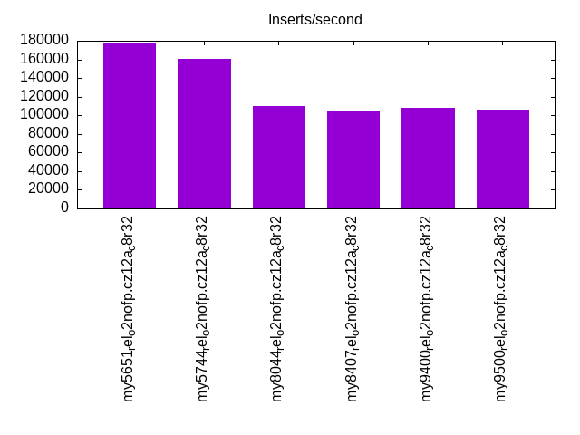
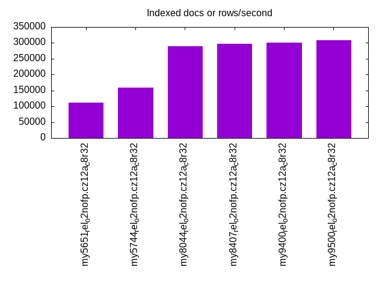
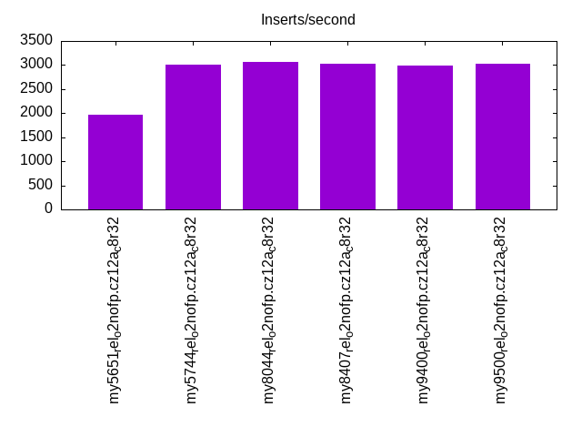
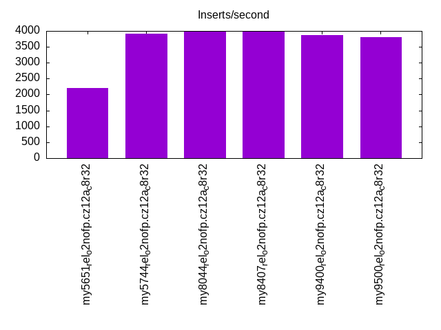
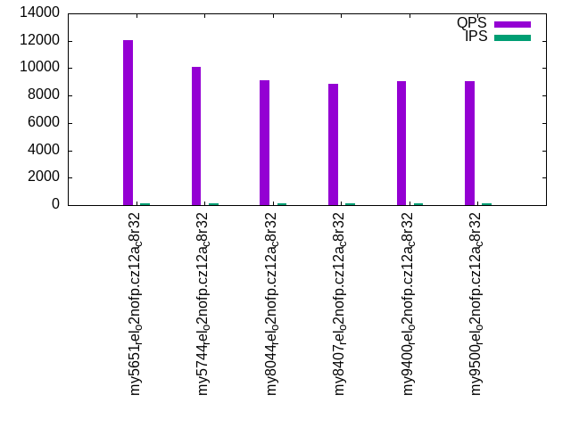
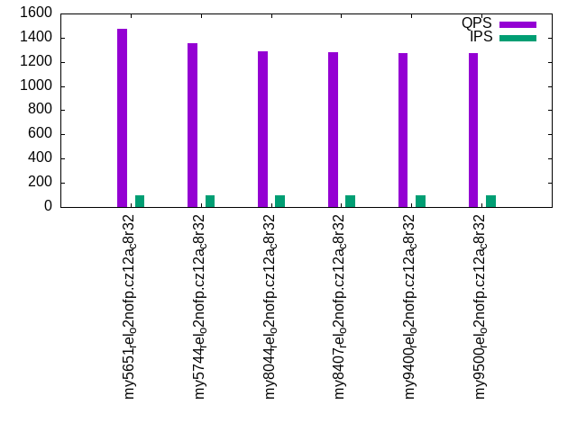
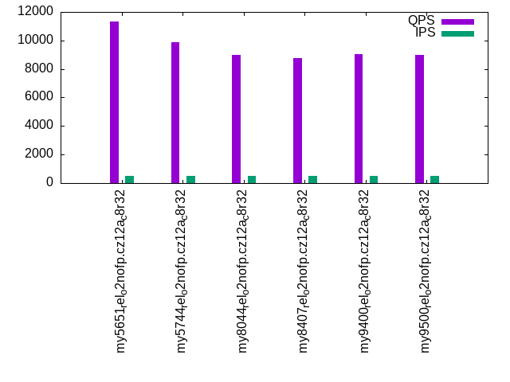
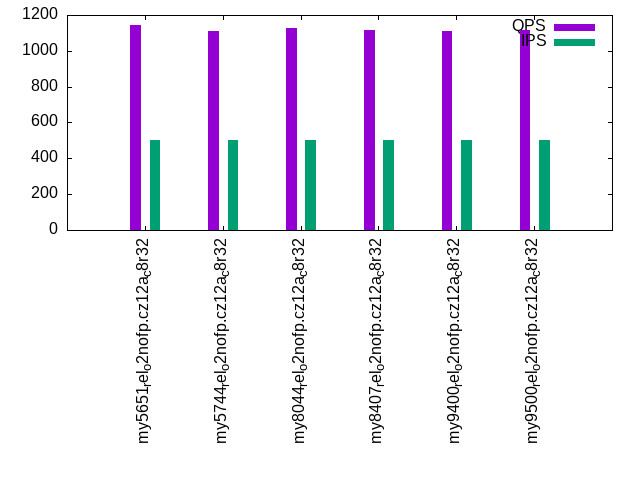
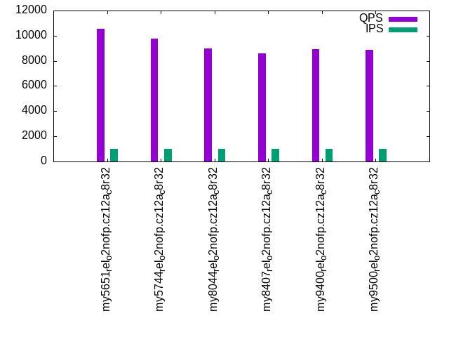
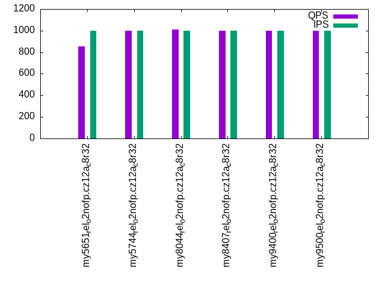

This is a report for the insert benchmark with 800M docs and 1 client(s). It is generated by scripts (bash, awk, sed) and Tufte might not be impressed. An overview of the insert benchmark is here and a short update is here. Below, by DBMS, I mean DBMS+version.config. An example is my8020.c10b40 where my means MySQL, 8020 is version 8.0.20 and c10b40 is the name for the configuration file.
The test server has 8 AMD cores, 32G RAM and an NVMe device for the database. The benchmark was run with 1 client and there were 1 or 3 connections per client (1 for queries or inserts without rate limits, 1+1 for rate limited inserts+deletes). It uses 1 table with a table per client. It loads 800M rows per table without secondary indexes, creates 3 secondary indexes per table, then inserts 4m+1m rows per table with a delete per insert to avoid growing the table. It then does 6 read+write tests for 1800s each that do queries as fast as possible with 100,100,500,500,1000,1000 inserts/s and the same for deletes/s per client concurrent with the queries. The database is larger than memory and the workload is IO-bound for except for the range query tests (qr*). Clients and the DBMS share one server.
The tested DBMS are:
The numbers are inserts/s for l.i0, l.i1 and l.i2, indexed docs (or rows) /s for l.x and queries/s for qr100, qp100 thru qr1000, qp1000" The values are the average rate over the entire test for inserts (IPS) and queries (QPS). The range of values for IPS and QPS is split into 3 parts: bottom 25%, middle 50%, top 25%. Values in the bottom 25% have a red background, values in the top 25% have a green background and values in the middle have no color. A gray background is used for values that can be ignored because the DBMS did not sustain the target insert rate. Red backgrounds are not used when the minimum value is within 80% of the max value.
| dbms | l.i0 | l.x | l.i1 | l.i2 | qr100 | qp100 | qr500 | qp500 | qr1000 | qp1000 |
|---|---|---|---|---|---|---|---|---|---|---|
| my5651_rel_o2nofp.cz12a_c8r32 | 177148 | 112233 | 1975 | 2198 | 12027 | 1471 | 11348 | 1145 | 10547 | 856 |
| my5744_rel_o2nofp.cz12a_c8r32 | 160642 | 159077 | 3003 | 3906 | 10067 | 1351 | 9902 | 1110 | 9779 | 1001 |
| my8044_rel_o2nofp.cz12a_c8r32 | 110072 | 289855 | 3074 | 3968 | 9115 | 1289 | 9012 | 1128 | 8965 | 1010 |
| my8407_rel_o2nofp.cz12a_c8r32 | 105416 | 297398 | 3035 | 4000 | 8850 | 1279 | 8759 | 1117 | 8612 | 999 |
| my9400_rel_o2nofp.cz12a_c8r32 | 108430 | 300526 | 2994 | 3861 | 9075 | 1269 | 9059 | 1112 | 8953 | 997 |
| my9500_rel_o2nofp.cz12a_c8r32 | 106482 | 309119 | 3026 | 3802 | 9080 | 1275 | 8965 | 1115 | 8894 | 999 |
This table has relative throughput, throughput for the DBMS relative to the DBMS in the first line, using the absolute throughput from the previous table. Values less than 0.95 have a yellow background. Values greater than 1.05 have a blue background.
| dbms | l.i0 | l.x | l.i1 | l.i2 | qr100 | qp100 | qr500 | qp500 | qr1000 | qp1000 |
|---|---|---|---|---|---|---|---|---|---|---|
| my5651_rel_o2nofp.cz12a_c8r32 | 1.00 | 1.00 | 1.00 | 1.00 | 1.00 | 1.00 | 1.00 | 1.00 | 1.00 | 1.00 |
| my5744_rel_o2nofp.cz12a_c8r32 | 0.91 | 1.42 | 1.52 | 1.78 | 0.84 | 0.92 | 0.87 | 0.97 | 0.93 | 1.17 |
| my8044_rel_o2nofp.cz12a_c8r32 | 0.62 | 2.58 | 1.56 | 1.81 | 0.76 | 0.88 | 0.79 | 0.99 | 0.85 | 1.18 |
| my8407_rel_o2nofp.cz12a_c8r32 | 0.60 | 2.65 | 1.54 | 1.82 | 0.74 | 0.87 | 0.77 | 0.98 | 0.82 | 1.17 |
| my9400_rel_o2nofp.cz12a_c8r32 | 0.61 | 2.68 | 1.52 | 1.76 | 0.75 | 0.86 | 0.80 | 0.97 | 0.85 | 1.16 |
| my9500_rel_o2nofp.cz12a_c8r32 | 0.60 | 2.75 | 1.53 | 1.73 | 0.75 | 0.87 | 0.79 | 0.97 | 0.84 | 1.17 |
This lists the average rate of inserts/s for the tests that do inserts concurrent with queries. For such tests the query rate is listed in the table above. The read+write tests are setup so that the insert rate should match the target rate every second. Cells that are not at least 95% of the target have a red background to indicate a failure to satisfy the target.
| dbms | qr100.L1 | qp100.L2 | qr500.L3 | qp500.L4 | qr1000.L5 | qp1000.L6 |
|---|---|---|---|---|---|---|
| my5651_rel_o2nofp.cz12a_c8r32 | 100 | 100 | 500 | 500 | 999 | 999 |
| my5744_rel_o2nofp.cz12a_c8r32 | 100 | 100 | 500 | 500 | 999 | 999 |
| my8044_rel_o2nofp.cz12a_c8r32 | 100 | 100 | 500 | 500 | 1000 | 1000 |
| my8407_rel_o2nofp.cz12a_c8r32 | 100 | 100 | 500 | 500 | 1000 | 1000 |
| my9400_rel_o2nofp.cz12a_c8r32 | 100 | 100 | 500 | 500 | 1000 | 1000 |
| my9500_rel_o2nofp.cz12a_c8r32 | 100 | 100 | 500 | 500 | 1000 | 1000 |
| target | 100 | 100 | 500 | 500 | 1000 | 1000 |
l.i0: load without secondary indexes. Graphs for performance per 1-second interval are here.
Average throughput:
Insert response time histogram: each cell has the percentage of responses that take <= the time in the header and max is the max response time in seconds. For the max column values in the top 25% of the range have a red background and in the bottom 25% of the range have a green background. The red background is not used when the min value is within 80% of the max value.
| dbms | 256us | 1ms | 4ms | 16ms | 64ms | 256ms | 1s | 4s | 16s | gt | max |
|---|---|---|---|---|---|---|---|---|---|---|---|
| my5651_rel_o2nofp.cz12a_c8r32 | 99.555 | 0.380 | 0.022 | 0.041 | 0.002 | 0.222 | |||||
| my5744_rel_o2nofp.cz12a_c8r32 | 99.711 | 0.115 | 0.059 | 0.114 | 0.001 | 0.161 | |||||
| my8044_rel_o2nofp.cz12a_c8r32 | 99.574 | 0.250 | 0.056 | 0.118 | 0.001 | nonzero | 0.334 | ||||
| my8407_rel_o2nofp.cz12a_c8r32 | 99.551 | 0.271 | 0.053 | 0.123 | 0.002 | nonzero | 0.337 | ||||
| my9400_rel_o2nofp.cz12a_c8r32 | 99.569 | 0.256 | 0.116 | 0.057 | 0.001 | nonzero | 0.318 | ||||
| my9500_rel_o2nofp.cz12a_c8r32 | 99.494 | 0.330 | 0.085 | 0.089 | 0.002 | nonzero | 0.325 |
Performance metrics for the DBMS listed above. Some are normalized by throughput, others are not. Legend for results is here.
ips qps rps rmbps wps wmbps rpq rkbpq wpi wkbpi csps cpups cspq cpupq dbgb1 dbgb2 rss maxop p50 p99 tag 177148 0 1496 5.8 1159.6 63.5 0.008 0.034 0.007 0.367 23812 19.6 0.134 9 52.6 83.1 24.7 0.222 177976 143381 my5651_rel_o2nofp.cz12a_c8r32 160642 0 0 0.0 1063.3 57.8 0.000 0.000 0.007 0.369 18897 19.4 0.118 10 52.6 83.1 25.0 0.161 160578 149979 my5744_rel_o2nofp.cz12a_c8r32 110072 0 0 0.0 746.5 41.3 0.000 0.000 0.007 0.384 13604 17.2 0.124 13 52.4 83.0 25.3 0.334 110082 102785 my8044_rel_o2nofp.cz12a_c8r32 105416 0 0 0.0 715.5 39.6 0.000 0.000 0.007 0.384 13046 17.2 0.124 13 52.4 120.1 25.3 0.337 105288 98187 my8407_rel_o2nofp.cz12a_c8r32 108430 0 0 0.0 735.6 40.7 0.000 0.000 0.007 0.384 13422 17.2 0.124 13 52.4 120.1 25.3 0.318 108386 101387 my9400_rel_o2nofp.cz12a_c8r32 106482 0 0 0.0 730.4 40.4 0.000 0.000 0.007 0.388 14060 17.2 0.132 13 52.4 120.1 25.4 0.325 106485 98787 my9500_rel_o2nofp.cz12a_c8r32
Average values from iostat.
r/s rkB/s rrqm/s %rrqm r_await rareq-s w/s wkB/s wrqm/s %wrqm w_await wareq-s d/s dkB/s drqm/s %drqm d_await dareq-s f/s f_await aqu-sz %util 1496.0 5984.6 0.000 0.000 0.106 3.965 1160.6 65078.2 10.29 0.902 0.479 57.06 0.263 1.999 0.000 0.000 0.150 1.122 1.528 2.558 0.763 11.78 my5651_rel_o2nofp.cz12a_c8r32 0.244 1.878 0.000 0.000 2.385 2.347 1064.1 59247.2 21.88 2.057 0.889 55.32 0.315 4.446 0.000 0.000 0.126 2.328 4.393 1.533 0.918 6.915 my5744_rel_o2nofp.cz12a_c8r32 0.204 1.737 0.002 0.044 1.912 2.033 746.9 42301.9 15.87 2.131 1.460 56.33 0.215 1.990 0.000 0.000 0.127 1.643 4.550 1.528 1.070 5.121 my8044_rel_o2nofp.cz12a_c8r32 0.190 1.608 0.002 0.045 1.970 1.985 715.8 40513.8 15.13 2.115 1.452 56.28 0.151 2.796 0.000 0.000 0.129 3.897 4.463 1.564 1.022 5.046 my8407_rel_o2nofp.cz12a_c8r32 0.198 1.732 0.000 0.000 2.051 1.976 735.9 41674.3 15.66 2.140 1.402 56.32 0.236 1.923 0.000 0.000 0.099 1.420 4.514 1.076 1.015 4.770 my9400_rel_o2nofp.cz12a_c8r32 0.192 1.601 0.000 0.000 1.931 1.984 730.7 41370.8 15.82 2.165 1.443 56.33 0.158 2.067 0.000 0.000 0.117 2.756 4.591 1.264 1.038 4.858 my9500_rel_o2nofp.cz12a_c8r32
l.x: create secondary indexes.
Average throughput:
Performance metrics for the DBMS listed above. Some are normalized by throughput, others are not. Legend for results is here.
ips qps rps rmbps wps wmbps rpq rkbpq wpi wkbpi csps cpups cspq cpupq dbgb1 dbgb2 rss maxop p50 p99 tag 112233 0 1216 111.6 1791.4 145.3 0.011 1.019 0.016 1.325 2299 10.1 0.020 7 111.4 141.9 24.8 0.004 NA NA my5651_rel_o2nofp.cz12a_c8r32 159077 0 1677 155.8 2412.2 189.5 0.011 1.003 0.015 1.220 8900 11.6 0.056 6 121.1 151.7 25.1 0.001 NA NA my5744_rel_o2nofp.cz12a_c8r32 289855 0 4016 395.3 8753.0 442.0 0.014 1.396 0.030 1.562 20348 41.5 0.070 11 120.7 151.3 25.4 0.002 NA NA my8044_rel_o2nofp.cz12a_c8r32 297398 0 4121 407.3 8983.2 453.6 0.014 1.402 0.030 1.562 21046 41.5 0.071 11 120.7 188.4 25.4 0.001 NA NA my8407_rel_o2nofp.cz12a_c8r32 300526 0 4115 401.0 9087.4 458.6 0.014 1.366 0.030 1.563 21351 41.2 0.071 11 120.7 188.4 25.4 0.002 NA NA my9400_rel_o2nofp.cz12a_c8r32 309119 0 4291 423.9 9351.9 471.9 0.014 1.404 0.030 1.563 21635 41.5 0.070 11 120.7 188.4 25.6 0.002 NA NA my9500_rel_o2nofp.cz12a_c8r32
Average values from iostat.
r/s rkB/s rrqm/s %rrqm r_await rareq-s w/s wkB/s wrqm/s %wrqm w_await wareq-s d/s dkB/s drqm/s %drqm d_await dareq-s f/s f_await aqu-sz %util 1215.0 114372 0.000 0.000 0.154 94.59 1792.5 148842 85.30 4.005 0.239 90.66 0.169 4609.8 0.000 0.000 0.001 38.81 31.03 2.666 0.686 38.15 my5651_rel_o2nofp.cz12a_c8r32 1676.1 159695 0.000 0.000 0.153 97.72 2407.9 194037 15.94 0.484 0.139 117.9 0.527 10119.4 0.000 0.000 0.004 85.61 3.851 2.804 0.579 23.64 my5744_rel_o2nofp.cz12a_c8r32 4010.5 405300 0.000 0.000 0.334 114.4 8738.2 453109 34.01 0.435 0.544 70.94 4.553 47124.1 0.000 0.000 0.022 316.1 7.745 3.002 5.316 63.42 my8044_rel_o2nofp.cz12a_c8r32 4114.8 417601 0.000 0.000 0.350 114.7 8968.0 464928 34.94 0.437 0.572 70.33 4.883 48389.5 0.000 0.000 0.017 290.8 7.913 3.236 5.751 65.62 my8407_rel_o2nofp.cz12a_c8r32 4109.0 411197 0.013 0.001 0.282 111.9 9072.5 470084 34.89 0.459 0.608 69.48 4.773 44110.2 0.000 0.000 0.017 296.2 8.039 2.509 5.425 59.74 my9400_rel_o2nofp.cz12a_c8r32 4285.7 434654 0.000 0.000 0.304 114.2 9337.4 483717 35.44 0.441 0.594 69.42 4.679 42574.9 0.000 0.000 0.017 213.6 8.229 2.694 5.688 62.21 my9500_rel_o2nofp.cz12a_c8r32
l.i1: continue load after secondary indexes created with 50 inserts per transaction. Graphs for performance per 1-second interval are here.
Average throughput:
Insert response time histogram: each cell has the percentage of responses that take <= the time in the header and max is the max response time in seconds. For the max column values in the top 25% of the range have a red background and in the bottom 25% of the range have a green background. The red background is not used when the min value is within 80% of the max value.
| dbms | 256us | 1ms | 4ms | 16ms | 64ms | 256ms | 1s | 4s | 16s | gt | max |
|---|---|---|---|---|---|---|---|---|---|---|---|
| my5651_rel_o2nofp.cz12a_c8r32 | 14.247 | 84.720 | 1.031 | 0.001 | 0.697 | ||||||
| my5744_rel_o2nofp.cz12a_c8r32 | 64.752 | 34.836 | 0.411 | 0.113 | |||||||
| my8044_rel_o2nofp.cz12a_c8r32 | 68.450 | 30.118 | 1.430 | 0.003 | 0.474 | ||||||
| my8407_rel_o2nofp.cz12a_c8r32 | 0.001 | 67.840 | 30.610 | 1.546 | 0.003 | 0.500 | |||||
| my9400_rel_o2nofp.cz12a_c8r32 | 67.406 | 30.990 | 1.601 | 0.003 | 0.477 | ||||||
| my9500_rel_o2nofp.cz12a_c8r32 | 68.093 | 30.406 | 1.499 | 0.003 | 0.493 |
Delete response time histogram: each cell has the percentage of responses that take <= the time in the header and max is the max response time in seconds. For the max column values in the top 25% of the range have a red background and in the bottom 25% of the range have a green background. The red background is not used when the min value is within 80% of the max value.
| dbms | 256us | 1ms | 4ms | 16ms | 64ms | 256ms | 1s | 4s | 16s | gt | max |
|---|---|---|---|---|---|---|---|---|---|---|---|
| my5651_rel_o2nofp.cz12a_c8r32 | 0.024 | 94.983 | 4.772 | 0.219 | 0.001 | 0.001 | 0.574 | ||||
| my5744_rel_o2nofp.cz12a_c8r32 | 0.004 | 99.677 | 0.285 | 0.034 | 0.049 | ||||||
| my8044_rel_o2nofp.cz12a_c8r32 | 99.404 | 0.544 | 0.051 | 0.001 | 0.466 | ||||||
| my8407_rel_o2nofp.cz12a_c8r32 | 99.369 | 0.585 | 0.044 | 0.001 | 0.001 | 0.468 | |||||
| my9400_rel_o2nofp.cz12a_c8r32 | 99.350 | 0.599 | 0.046 | 0.005 | 0.104 | ||||||
| my9500_rel_o2nofp.cz12a_c8r32 | 99.364 | 0.583 | 0.051 | 0.003 | 0.492 |
Performance metrics for the DBMS listed above. Some are normalized by throughput, others are not. Legend for results is here.
ips qps rps rmbps wps wmbps rpq rkbpq wpi wkbpi csps cpups cspq cpupq dbgb1 dbgb2 rss maxop p50 p99 tag 1975 0 9384 145.8 16394.7 382.2 4.751 75.581 8.300 198.112 45500 16.5 23.034 668 144.5 175.0 24.7 0.697 1850 1200 my5651_rel_o2nofp.cz12a_c8r32 3003 0 13870 216.7 18840.3 560.2 4.619 73.901 6.274 191.029 36919 22.2 12.294 591 144.6 175.1 25.1 0.113 3000 1600 my5744_rel_o2nofp.cz12a_c8r32 3074 0 11435 178.7 16790.9 505.3 3.719 59.506 5.461 168.300 75710 21.7 24.625 565 148.8 179.6 25.4 0.474 2900 1750 my8044_rel_o2nofp.cz12a_c8r32 3035 0 11308 176.7 16592.3 498.6 3.726 59.614 5.467 168.240 76794 21.6 25.304 569 148.7 217.1 25.4 0.500 2850 1700 my8407_rel_o2nofp.cz12a_c8r32 2994 0 11170 174.5 16392.6 493.1 3.731 59.694 5.475 168.660 75995 21.4 25.383 572 148.7 217.0 24.5 0.477 2850 1650 my9400_rel_o2nofp.cz12a_c8r32 3026 0 11282 176.3 16545.3 497.1 3.729 59.659 5.468 168.228 76245 21.7 25.199 574 148.8 217.1 25.5 0.493 2850 1700 my9500_rel_o2nofp.cz12a_c8r32
Average values from iostat.
r/s rkB/s rrqm/s %rrqm r_await rareq-s w/s wkB/s wrqm/s %wrqm w_await wareq-s d/s dkB/s drqm/s %drqm d_await dareq-s f/s f_await aqu-sz %util 9397.2 149511 0.000 0.000 0.102 15.91 16407.4 389368 16.42 0.142 0.038 24.98 0.002 0.083 0.000 0.000 0.007 0.406 3.948 2.508 1.496 72.27 my5651_rel_o2nofp.cz12a_c8r32 13880.7 222090 0.000 0.000 0.151 16.00 18905.8 575401 37.25 0.331 0.143 31.39 0.004 0.027 0.000 0.000 0.009 0.121 9.795 3.264 4.791 79.65 my5744_rel_o2nofp.cz12a_c8r32 11446.2 183137 0.000 0.000 0.152 16.00 16846.7 518881 48.20 0.396 1.890 31.43 0.013 0.432 0.000 0.000 0.017 0.726 10.18 3.548 33.80 74.31 my8044_rel_o2nofp.cz12a_c8r32 11319.1 181103 0.000 0.000 0.150 16.00 16644.7 511942 63.69 0.481 2.098 31.34 0.018 0.791 0.000 0.000 0.025 2.116 10.02 3.633 36.86 74.03 my8407_rel_o2nofp.cz12a_c8r32 11182.6 178921 0.007 0.000 0.156 16.00 16446.0 506362 36.51 0.348 2.087 31.52 0.015 0.956 0.000 0.000 0.019 2.078 9.928 3.635 36.48 73.65 my9400_rel_o2nofp.cz12a_c8r32 11292.6 180680 0.000 0.000 0.157 16.00 16599.8 510419 50.51 0.413 2.106 31.45 0.014 0.855 0.000 0.000 0.022 1.825 10.11 3.689 37.10 73.77 my9500_rel_o2nofp.cz12a_c8r32
l.i2: continue load after secondary indexes created with 5 inserts per transaction. Graphs for performance per 1-second interval are here.
Average throughput:
Insert response time histogram: each cell has the percentage of responses that take <= the time in the header and max is the max response time in seconds. For the max column values in the top 25% of the range have a red background and in the bottom 25% of the range have a green background. The red background is not used when the min value is within 80% of the max value.
| dbms | 256us | 1ms | 4ms | 16ms | 64ms | 256ms | 1s | 4s | 16s | gt | max |
|---|---|---|---|---|---|---|---|---|---|---|---|
| my5651_rel_o2nofp.cz12a_c8r32 | 0.386 | 16.956 | 72.162 | 10.281 | 0.215 | 0.035 | |||||
| my5744_rel_o2nofp.cz12a_c8r32 | 0.789 | 56.744 | 38.871 | 3.562 | 0.034 | 0.039 | |||||
| my8044_rel_o2nofp.cz12a_c8r32 | 0.001 | 55.420 | 41.381 | 3.159 | 0.039 | 0.048 | |||||
| my8407_rel_o2nofp.cz12a_c8r32 | 55.695 | 41.160 | 3.110 | 0.036 | 0.044 | ||||||
| my9400_rel_o2nofp.cz12a_c8r32 | 53.611 | 43.108 | 3.228 | 0.053 | 0.052 | ||||||
| my9500_rel_o2nofp.cz12a_c8r32 | 50.318 | 46.282 | 3.349 | 0.051 | 0.031 |
Delete response time histogram: each cell has the percentage of responses that take <= the time in the header and max is the max response time in seconds. For the max column values in the top 25% of the range have a red background and in the bottom 25% of the range have a green background. The red background is not used when the min value is within 80% of the max value.
| dbms | 256us | 1ms | 4ms | 16ms | 64ms | 256ms | 1s | 4s | 16s | gt | max |
|---|---|---|---|---|---|---|---|---|---|---|---|
| my5651_rel_o2nofp.cz12a_c8r32 | 4.109 | 74.066 | 20.787 | 0.988 | 0.051 | 0.031 | |||||
| my5744_rel_o2nofp.cz12a_c8r32 | 38.399 | 61.453 | 0.122 | 0.025 | 0.001 | 0.024 | |||||
| my8044_rel_o2nofp.cz12a_c8r32 | 98.119 | 1.758 | 0.113 | 0.009 | 0.029 | ||||||
| my8407_rel_o2nofp.cz12a_c8r32 | 0.001 | 98.276 | 1.615 | 0.102 | 0.006 | 0.032 | |||||
| my9400_rel_o2nofp.cz12a_c8r32 | 98.145 | 1.720 | 0.127 | 0.009 | 0.040 | ||||||
| my9500_rel_o2nofp.cz12a_c8r32 | 97.744 | 2.097 | 0.149 | 0.010 | 0.062 |
Performance metrics for the DBMS listed above. Some are normalized by throughput, others are not. Legend for results is here.
ips qps rps rmbps wps wmbps rpq rkbpq wpi wkbpi csps cpups cspq cpupq dbgb1 dbgb2 rss maxop p50 p99 tag 2198 0 9893 146.5 15586.5 366.3 4.501 68.240 7.092 170.668 59892 24.2 27.251 881 144.5 175.0 24.7 0.035 2190 1940 my5651_rel_o2nofp.cz12a_c8r32 3906 0 15695 245.2 21534.2 621.1 4.018 64.288 5.513 162.808 59863 31.0 15.325 635 144.6 175.1 25.1 0.039 3970 3055 my5744_rel_o2nofp.cz12a_c8r32 3968 0 10903 170.4 16728.2 486.3 2.748 43.962 4.216 125.498 96100 29.2 24.218 589 148.9 179.8 25.4 0.048 3925 3535 my8044_rel_o2nofp.cz12a_c8r32 4000 0 10852 169.6 16704.9 484.9 2.713 43.408 4.176 124.136 97172 29.6 24.293 592 148.9 217.5 25.4 0.044 3925 3545 my8407_rel_o2nofp.cz12a_c8r32 3861 0 10658 166.5 16315.4 474.5 2.760 44.165 4.226 125.843 95973 28.9 24.857 599 148.9 217.5 24.5 0.052 3805 3375 my9400_rel_o2nofp.cz12a_c8r32 3802 0 10686 167.0 16372.4 475.2 2.811 44.968 4.306 127.973 96428 29.4 25.361 619 148.8 217.4 25.5 0.031 3750 3435 my9500_rel_o2nofp.cz12a_c8r32
Average values from iostat.
r/s rkB/s rrqm/s %rrqm r_await rareq-s w/s wkB/s wrqm/s %wrqm w_await wareq-s d/s dkB/s drqm/s %drqm d_await dareq-s f/s f_await aqu-sz %util 9866.7 149567 0.000 0.000 0.118 15.16 15550.4 374683 10.42 0.067 0.041 24.10 0.038 1.467 0.000 0.000 0.100 3.867 3.769 3.050 1.797 75.27 my5651_rel_o2nofp.cz12a_c8r32 15697.2 251155 0.000 0.000 0.176 16.00 21560.0 636728 19.36 0.090 0.117 29.53 0.032 0.320 0.000 0.000 0.130 1.280 6.420 3.680 5.259 81.04 my5744_rel_o2nofp.cz12a_c8r32 10892.1 174272 0.000 0.000 0.174 16.00 16723.9 497891 12.16 0.072 1.894 29.77 0.008 0.033 0.000 0.000 0.020 0.082 5.682 4.022 33.57 69.69 my8044_rel_o2nofp.cz12a_c8r32 10846.8 173548 0.000 0.000 0.158 16.00 16689.7 496121 26.98 0.161 2.025 29.72 0.008 0.473 0.000 0.000 0.010 1.184 5.910 4.065 35.54 69.45 my8407_rel_o2nofp.cz12a_c8r32 10650.3 170404 0.000 0.000 0.175 16.00 16309.1 485680 2.412 0.016 2.055 29.78 0.000 0.000 0.000 0.000 0.000 0.000 5.656 4.239 35.41 68.86 my9400_rel_o2nofp.cz12a_c8r32 10675.7 170810 0.000 0.000 0.170 16.00 16359.0 486209 14.15 0.087 2.060 29.72 0.000 0.000 0.000 0.000 0.000 0.000 5.447 4.157 35.54 68.53 my9500_rel_o2nofp.cz12a_c8r32
qr100.L1: range queries with 100 insert/s per client. Graphs for performance per 1-second interval are here.
Average throughput:
Query response time histogram: each cell has the percentage of responses that take <= the time in the header and max is the max response time in seconds. For max values in the top 25% of the range have a red background and in the bottom 25% of the range have a green background. The red background is not used when the min value is within 80% of the max value.
| dbms | 256us | 1ms | 4ms | 16ms | 64ms | 256ms | 1s | 4s | 16s | gt | max |
|---|---|---|---|---|---|---|---|---|---|---|---|
| my5651_rel_o2nofp.cz12a_c8r32 | 99.759 | 0.205 | 0.026 | 0.009 | nonzero | 0.032 | |||||
| my5744_rel_o2nofp.cz12a_c8r32 | 99.917 | 0.074 | 0.004 | 0.005 | 0.011 | ||||||
| my8044_rel_o2nofp.cz12a_c8r32 | 99.981 | 0.018 | nonzero | nonzero | 0.009 | ||||||
| my8407_rel_o2nofp.cz12a_c8r32 | 99.979 | 0.020 | nonzero | nonzero | 0.010 | ||||||
| my9400_rel_o2nofp.cz12a_c8r32 | 99.979 | 0.020 | nonzero | 0.001 | 0.012 | ||||||
| my9500_rel_o2nofp.cz12a_c8r32 | 99.980 | 0.020 | nonzero | nonzero | 0.012 |
Insert response time histogram: each cell has the percentage of responses that take <= the time in the header and max is the max response time in seconds. For max values in the top 25% of the range have a red background and in the bottom 25% of the range have a green background. The red background is not used when the min value is within 80% of the max value.
| dbms | 256us | 1ms | 4ms | 16ms | 64ms | 256ms | 1s | 4s | 16s | gt | max |
|---|---|---|---|---|---|---|---|---|---|---|---|
| my5651_rel_o2nofp.cz12a_c8r32 | 47.500 | 51.083 | 1.417 | 0.131 | |||||||
| my5744_rel_o2nofp.cz12a_c8r32 | 78.778 | 21.222 | 0.022 | ||||||||
| my8044_rel_o2nofp.cz12a_c8r32 | 65.722 | 34.278 | 0.027 | ||||||||
| my8407_rel_o2nofp.cz12a_c8r32 | 68.194 | 31.806 | 0.027 | ||||||||
| my9400_rel_o2nofp.cz12a_c8r32 | 58.889 | 41.111 | 0.027 | ||||||||
| my9500_rel_o2nofp.cz12a_c8r32 | 57.111 | 42.889 | 0.027 |
Delete response time histogram: each cell has the percentage of responses that take <= the time in the header and max is the max response time in seconds. For max values in the top 25% of the range have a red background and in the bottom 25% of the range have a green background. The red background is not used when the min value is within 80% of the max value.
| dbms | 256us | 1ms | 4ms | 16ms | 64ms | 256ms | 1s | 4s | 16s | gt | max |
|---|---|---|---|---|---|---|---|---|---|---|---|
| my5651_rel_o2nofp.cz12a_c8r32 | 1.250 | 14.972 | 75.611 | 7.889 | 0.278 | 0.101 | |||||
| my5744_rel_o2nofp.cz12a_c8r32 | 31.917 | 67.333 | 0.750 | 0.012 | |||||||
| my8044_rel_o2nofp.cz12a_c8r32 | 92.194 | 7.806 | 0.012 | ||||||||
| my8407_rel_o2nofp.cz12a_c8r32 | 92.972 | 7.028 | 0.011 | ||||||||
| my9400_rel_o2nofp.cz12a_c8r32 | 90.583 | 9.417 | 0.012 | ||||||||
| my9500_rel_o2nofp.cz12a_c8r32 | 90.861 | 9.111 | 0.028 | 0.021 |
Performance metrics for the DBMS listed above. Some are normalized by throughput, others are not. Legend for results is here.
ips qps rps rmbps wps wmbps rpq rkbpq wpi wkbpi csps cpups cspq cpupq dbgb1 dbgb2 rss maxop p50 p99 tag 100 12027 468 7.3 1112.3 31.2 0.039 0.618 11.135 320.022 70529 12.1 5.864 80 144.5 175.0 24.7 0.032 12126 10719 my5651_rel_o2nofp.cz12a_c8r32 100 10067 466 7.3 286.0 8.3 0.046 0.740 2.860 85.385 58593 12.6 5.820 100 144.6 175.1 25.1 0.011 10127 9375 my5744_rel_o2nofp.cz12a_c8r32 100 9115 417 6.5 305.0 8.8 0.046 0.732 3.050 90.362 53993 12.7 5.923 111 148.9 179.8 25.3 0.009 9119 8943 my8044_rel_o2nofp.cz12a_c8r32 100 8850 418 6.5 306.8 8.9 0.047 0.755 3.068 90.764 52489 13.4 5.931 121 148.9 217.5 25.4 0.010 8863 8703 my8407_rel_o2nofp.cz12a_c8r32 100 9075 418 6.5 306.0 8.9 0.046 0.737 3.063 90.972 53787 13.2 5.927 116 148.9 217.5 24.5 0.012 9087 8943 my9400_rel_o2nofp.cz12a_c8r32 100 9080 419 6.5 312.9 9.0 0.046 0.738 3.132 92.563 53837 12.9 5.929 114 148.8 217.4 25.5 0.012 9103 8911 my9500_rel_o2nofp.cz12a_c8r32
Average values from iostat.
r/s rkB/s rrqm/s %rrqm r_await rareq-s w/s wkB/s wrqm/s %wrqm w_await wareq-s d/s dkB/s drqm/s %drqm d_await dareq-s f/s f_await aqu-sz %util 448.5 7120.9 0.000 0.000 0.673 15.87 1111.6 31947.8 6.544 7.080 1.122 42.03 0.000 0.000 0.000 0.000 0.000 0.000 2.860 1.464 0.363 6.294 my5651_rel_o2nofp.cz12a_c8r32 446.4 7141.9 0.000 0.000 2.070 16.00 283.4 8465.4 3.811 2.158 0.263 30.87 0.000 0.000 0.000 0.000 0.000 0.000 1.403 1.629 0.922 4.131 my5744_rel_o2nofp.cz12a_c8r32 414.5 6631.9 0.000 0.000 0.698 16.00 302.2 8956.0 0.942 0.484 0.524 30.41 0.000 0.000 0.000 0.000 0.000 0.000 2.208 1.887 0.407 5.886 my8044_rel_o2nofp.cz12a_c8r32 414.8 6637.4 0.000 0.000 0.622 16.00 304.6 9011.5 1.051 0.519 0.541 30.37 0.000 0.000 0.000 0.000 0.000 0.000 2.328 1.806 0.385 6.280 my8407_rel_o2nofp.cz12a_c8r32 415.6 6649.1 0.000 0.000 1.018 16.00 303.4 9014.9 0.903 0.490 0.225 30.56 0.000 0.000 0.000 0.000 0.000 0.000 1.774 1.854 0.485 4.527 my9400_rel_o2nofp.cz12a_c8r32 416.3 6660.3 0.000 0.000 0.794 16.00 310.3 9172.2 1.017 0.510 0.171 30.34 0.000 0.000 0.000 0.000 0.000 0.000 2.603 1.795 0.392 4.039 my9500_rel_o2nofp.cz12a_c8r32
qp100.L2: point queries with 100 insert/s per client. Graphs for performance per 1-second interval are here.
Average throughput:
Query response time histogram: each cell has the percentage of responses that take <= the time in the header and max is the max response time in seconds. For max values in the top 25% of the range have a red background and in the bottom 25% of the range have a green background. The red background is not used when the min value is within 80% of the max value.
| dbms | 256us | 1ms | 4ms | 16ms | 64ms | 256ms | 1s | 4s | 16s | gt | max |
|---|---|---|---|---|---|---|---|---|---|---|---|
| my5651_rel_o2nofp.cz12a_c8r32 | 0.159 | 98.393 | 1.442 | 0.005 | 0.011 | ||||||
| my5744_rel_o2nofp.cz12a_c8r32 | 0.118 | 94.857 | 4.981 | 0.044 | 0.015 | ||||||
| my8044_rel_o2nofp.cz12a_c8r32 | 0.010 | 93.790 | 6.098 | 0.103 | nonzero | 0.025 | |||||
| my8407_rel_o2nofp.cz12a_c8r32 | 0.008 | 92.662 | 7.275 | 0.056 | 0.014 | ||||||
| my9400_rel_o2nofp.cz12a_c8r32 | 0.009 | 91.696 | 8.173 | 0.123 | nonzero | 0.016 | |||||
| my9500_rel_o2nofp.cz12a_c8r32 | 0.008 | 92.875 | 6.996 | 0.120 | nonzero | 0.018 |
Insert response time histogram: each cell has the percentage of responses that take <= the time in the header and max is the max response time in seconds. For max values in the top 25% of the range have a red background and in the bottom 25% of the range have a green background. The red background is not used when the min value is within 80% of the max value.
| dbms | 256us | 1ms | 4ms | 16ms | 64ms | 256ms | 1s | 4s | 16s | gt | max |
|---|---|---|---|---|---|---|---|---|---|---|---|
| my5651_rel_o2nofp.cz12a_c8r32 | 47.611 | 52.389 | 0.054 | ||||||||
| my5744_rel_o2nofp.cz12a_c8r32 | 75.250 | 24.750 | 0.039 | ||||||||
| my8044_rel_o2nofp.cz12a_c8r32 | 97.694 | 2.306 | 0.022 | ||||||||
| my8407_rel_o2nofp.cz12a_c8r32 | 98.944 | 1.056 | 0.038 | ||||||||
| my9400_rel_o2nofp.cz12a_c8r32 | 92.778 | 7.222 | 0.049 | ||||||||
| my9500_rel_o2nofp.cz12a_c8r32 | 94.361 | 5.639 | 0.045 |
Delete response time histogram: each cell has the percentage of responses that take <= the time in the header and max is the max response time in seconds. For max values in the top 25% of the range have a red background and in the bottom 25% of the range have a green background. The red background is not used when the min value is within 80% of the max value.
| dbms | 256us | 1ms | 4ms | 16ms | 64ms | 256ms | 1s | 4s | 16s | gt | max |
|---|---|---|---|---|---|---|---|---|---|---|---|
| my5651_rel_o2nofp.cz12a_c8r32 | 0.222 | 88.167 | 11.056 | 0.556 | 0.025 | ||||||
| my5744_rel_o2nofp.cz12a_c8r32 | 99.917 | 0.083 | 0.005 | ||||||||
| my8044_rel_o2nofp.cz12a_c8r32 | 99.750 | 0.250 | 0.005 | ||||||||
| my8407_rel_o2nofp.cz12a_c8r32 | 99.750 | 0.250 | 0.010 | ||||||||
| my9400_rel_o2nofp.cz12a_c8r32 | 99.694 | 0.306 | 0.006 | ||||||||
| my9500_rel_o2nofp.cz12a_c8r32 | 99.750 | 0.222 | 0.028 | 0.046 |
Performance metrics for the DBMS listed above. Some are normalized by throughput, others are not. Legend for results is here.
ips qps rps rmbps wps wmbps rpq rkbpq wpi wkbpi csps cpups cspq cpupq dbgb1 dbgb2 rss maxop p50 p99 tag 100 1471 9971 155.7 1051.4 29.3 6.778 108.418 10.524 299.980 28281 3.9 19.226 212 144.5 175.0 24.7 0.011 1552 1024 my5651_rel_o2nofp.cz12a_c8r32 100 1351 9293 145.2 1410.5 35.1 6.879 110.069 14.105 358.969 27635 4.6 20.456 272 144.6 175.1 25.1 0.015 1408 992 my5744_rel_o2nofp.cz12a_c8r32 100 1289 8967 140.1 1276.7 35.7 6.957 111.308 12.767 365.175 27189 5.7 21.093 354 148.9 179.8 25.3 0.025 1360 944 my8044_rel_o2nofp.cz12a_c8r32 100 1279 8908 139.2 1276.0 35.6 6.966 111.449 12.760 364.706 26681 5.6 20.864 350 148.9 217.5 25.4 0.014 1344 928 my8407_rel_o2nofp.cz12a_c8r32 100 1269 8827 137.9 1280.7 35.7 6.956 111.299 12.807 366.041 26933 5.0 21.224 315 148.9 217.5 24.5 0.016 1344 928 my9400_rel_o2nofp.cz12a_c8r32 100 1275 8882 138.8 1280.4 35.6 6.964 111.425 12.816 365.242 27116 5.6 21.260 351 148.8 217.5 25.5 0.018 1344 944 my9500_rel_o2nofp.cz12a_c8r32
Average values from iostat.
r/s rkB/s rrqm/s %rrqm r_await rareq-s w/s wkB/s wrqm/s %wrqm w_await wareq-s d/s dkB/s drqm/s %drqm d_await dareq-s f/s f_await aqu-sz %util 9969.6 159464 0.000 0.000 0.070 15.99 1054.3 30049.5 2.905 8.881 0.313 53.87 0.000 0.000 0.000 0.000 0.000 0.000 1.209 1.352 0.752 70.89 my5651_rel_o2nofp.cz12a_c8r32 9292.1 148673 0.000 0.000 0.078 16.00 1394.2 35422.9 3.293 0.320 0.037 25.29 0.003 0.040 0.000 0.000 0.011 0.201 1.131 2.740 0.761 68.43 my5744_rel_o2nofp.cz12a_c8r32 8966.0 143456 0.000 0.000 0.077 16.00 1260.8 36065.4 2.002 0.170 0.830 28.71 0.004 0.016 0.000 0.000 0.011 0.078 1.955 2.397 1.602 63.28 my8044_rel_o2nofp.cz12a_c8r32 8906.2 142499 0.000 0.000 0.074 16.00 1259.8 36010.7 3.560 0.266 0.670 28.70 0.001 0.007 0.000 0.000 0.001 0.017 1.843 1.966 1.309 62.68 my8407_rel_o2nofp.cz12a_c8r32 8826.1 141218 0.000 0.000 0.078 16.00 1265.7 36177.6 0.910 0.097 0.937 28.67 0.001 0.007 0.000 0.000 0.001 0.017 2.527 2.467 1.730 64.50 my9400_rel_o2nofp.cz12a_c8r32 8880.7 142090 0.000 0.000 0.078 16.00 1265.4 36064.7 2.513 0.210 1.017 28.59 0.001 0.007 0.000 0.000 0.001 0.017 2.604 2.451 1.796 63.07 my9500_rel_o2nofp.cz12a_c8r32
qr500.L3: range queries with 500 insert/s per client. Graphs for performance per 1-second interval are here.
Average throughput:
Query response time histogram: each cell has the percentage of responses that take <= the time in the header and max is the max response time in seconds. For max values in the top 25% of the range have a red background and in the bottom 25% of the range have a green background. The red background is not used when the min value is within 80% of the max value.
| dbms | 256us | 1ms | 4ms | 16ms | 64ms | 256ms | 1s | 4s | 16s | gt | max |
|---|---|---|---|---|---|---|---|---|---|---|---|
| my5651_rel_o2nofp.cz12a_c8r32 | 99.061 | 0.826 | 0.101 | 0.013 | 0.011 | ||||||
| my5744_rel_o2nofp.cz12a_c8r32 | 99.892 | 0.079 | 0.018 | 0.011 | 0.011 | ||||||
| my8044_rel_o2nofp.cz12a_c8r32 | 99.967 | 0.032 | 0.001 | nonzero | 0.010 | ||||||
| my8407_rel_o2nofp.cz12a_c8r32 | 99.964 | 0.035 | 0.001 | nonzero | 0.009 | ||||||
| my9400_rel_o2nofp.cz12a_c8r32 | 99.963 | 0.035 | 0.001 | 0.001 | 0.011 | ||||||
| my9500_rel_o2nofp.cz12a_c8r32 | 99.964 | 0.034 | 0.001 | 0.001 | 0.011 |
Insert response time histogram: each cell has the percentage of responses that take <= the time in the header and max is the max response time in seconds. For max values in the top 25% of the range have a red background and in the bottom 25% of the range have a green background. The red background is not used when the min value is within 80% of the max value.
| dbms | 256us | 1ms | 4ms | 16ms | 64ms | 256ms | 1s | 4s | 16s | gt | max |
|---|---|---|---|---|---|---|---|---|---|---|---|
| my5651_rel_o2nofp.cz12a_c8r32 | 0.067 | 61.700 | 38.233 | 0.056 | |||||||
| my5744_rel_o2nofp.cz12a_c8r32 | 0.167 | 96.978 | 2.856 | 0.028 | |||||||
| my8044_rel_o2nofp.cz12a_c8r32 | 93.511 | 6.483 | 0.006 | 0.318 | |||||||
| my8407_rel_o2nofp.cz12a_c8r32 | 99.839 | 0.161 | 0.053 | ||||||||
| my9400_rel_o2nofp.cz12a_c8r32 | 91.844 | 8.156 | 0.027 | ||||||||
| my9500_rel_o2nofp.cz12a_c8r32 | 92.144 | 7.850 | 0.006 | 0.345 |
Delete response time histogram: each cell has the percentage of responses that take <= the time in the header and max is the max response time in seconds. For max values in the top 25% of the range have a red background and in the bottom 25% of the range have a green background. The red background is not used when the min value is within 80% of the max value.
| dbms | 256us | 1ms | 4ms | 16ms | 64ms | 256ms | 1s | 4s | 16s | gt | max |
|---|---|---|---|---|---|---|---|---|---|---|---|
| my5651_rel_o2nofp.cz12a_c8r32 | 2.672 | 7.344 | 88.867 | 1.117 | 0.028 | ||||||
| my5744_rel_o2nofp.cz12a_c8r32 | 30.089 | 69.678 | 0.233 | 0.013 | |||||||
| my8044_rel_o2nofp.cz12a_c8r32 | 99.117 | 0.883 | 0.014 | ||||||||
| my8407_rel_o2nofp.cz12a_c8r32 | 99.967 | 0.028 | 0.006 | 0.052 | |||||||
| my9400_rel_o2nofp.cz12a_c8r32 | 99.283 | 0.717 | 0.011 | ||||||||
| my9500_rel_o2nofp.cz12a_c8r32 | 99.000 | 0.994 | 0.006 | 0.022 |
Performance metrics for the DBMS listed above. Some are normalized by throughput, others are not. Legend for results is here.
ips qps rps rmbps wps wmbps rpq rkbpq wpi wkbpi csps cpups cspq cpupq dbgb1 dbgb2 rss maxop p50 p99 tag 500 11348 2408 37.4 2379.5 68.5 0.212 3.379 4.762 140.294 72992 15.0 6.432 106 144.5 175.0 24.7 0.011 11439 9999 my5651_rel_o2nofp.cz12a_c8r32 500 9902 2377 37.1 2346.4 67.7 0.240 3.841 4.693 138.577 61762 14.3 6.237 116 144.6 175.1 25.1 0.011 9967 8383 my5744_rel_o2nofp.cz12a_c8r32 500 9012 2412 37.7 2470.5 71.2 0.268 4.282 4.944 145.851 61428 15.4 6.816 137 148.9 179.8 25.3 0.010 9023 8879 my8044_rel_o2nofp.cz12a_c8r32 500 8759 2413 37.7 2480.6 71.3 0.275 4.407 4.961 146.097 60016 15.4 6.852 141 148.9 217.6 25.3 0.009 8767 8639 my8407_rel_o2nofp.cz12a_c8r32 500 9059 2412 37.7 2468.4 71.1 0.266 4.261 4.937 145.635 61885 15.2 6.831 134 148.9 217.6 24.5 0.011 9071 8927 my9400_rel_o2nofp.cz12a_c8r32 500 8965 2412 37.7 2478.9 71.2 0.269 4.304 4.961 145.920 61793 15.6 6.893 139 148.8 217.5 25.5 0.011 8975 8815 my9500_rel_o2nofp.cz12a_c8r32
Average values from iostat.
r/s rkB/s rrqm/s %rrqm r_await rareq-s w/s wkB/s wrqm/s %wrqm w_await wareq-s d/s dkB/s drqm/s %drqm d_await dareq-s f/s f_await aqu-sz %util 2383.1 37942.1 0.000 0.000 0.325 15.92 2384.7 70250.9 4.287 0.343 0.071 31.63 0.007 0.027 0.000 0.000 0.017 0.134 1.460 1.390 0.859 13.03 my5651_rel_o2nofp.cz12a_c8r32 2353.4 37654.9 0.000 0.000 0.686 16.00 2350.4 69407.1 4.328 0.264 0.065 30.09 0.003 0.033 0.000 0.000 0.011 0.167 1.530 1.726 1.673 12.01 my5744_rel_o2nofp.cz12a_c8r32 2406.3 38500.2 0.000 0.000 0.517 16.00 2476.1 73044.6 3.346 0.152 0.343 30.09 0.006 0.025 0.000 0.000 0.022 0.123 2.049 1.637 1.895 13.88 my8044_rel_o2nofp.cz12a_c8r32 2407.2 38515.5 0.000 0.000 0.430 16.00 2486.4 73214.7 6.686 0.280 0.374 30.04 0.003 0.027 0.000 0.000 0.011 0.134 2.426 1.761 1.790 13.28 my8407_rel_o2nofp.cz12a_c8r32 2406.9 38510.4 0.000 0.000 0.590 16.00 2474.0 72979.4 1.084 0.063 0.226 30.10 0.003 0.011 0.000 0.000 0.006 0.056 1.982 1.592 1.882 13.12 my9400_rel_o2nofp.cz12a_c8r32 2406.1 38497.3 0.000 0.000 0.493 16.00 2484.6 73079.5 3.988 0.179 0.281 29.98 0.000 0.000 0.000 0.000 0.000 0.000 2.785 1.695 1.737 12.81 my9500_rel_o2nofp.cz12a_c8r32
qp500.L4: point queries with 500 insert/s per client. Graphs for performance per 1-second interval are here.
Average throughput:
Query response time histogram: each cell has the percentage of responses that take <= the time in the header and max is the max response time in seconds. For max values in the top 25% of the range have a red background and in the bottom 25% of the range have a green background. The red background is not used when the min value is within 80% of the max value.
| dbms | 256us | 1ms | 4ms | 16ms | 64ms | 256ms | 1s | 4s | 16s | gt | max |
|---|---|---|---|---|---|---|---|---|---|---|---|
| my5651_rel_o2nofp.cz12a_c8r32 | 0.011 | 81.780 | 17.988 | 0.220 | nonzero | 0.020 | |||||
| my5744_rel_o2nofp.cz12a_c8r32 | 0.005 | 82.675 | 17.012 | 0.308 | 0.001 | 0.024 | |||||
| my8044_rel_o2nofp.cz12a_c8r32 | nonzero | 87.710 | 11.708 | 0.581 | 0.001 | 0.038 | |||||
| my8407_rel_o2nofp.cz12a_c8r32 | nonzero | 85.994 | 13.403 | 0.601 | 0.001 | 0.023 | |||||
| my9400_rel_o2nofp.cz12a_c8r32 | nonzero | 85.694 | 13.697 | 0.607 | 0.002 | 0.029 | |||||
| my9500_rel_o2nofp.cz12a_c8r32 | nonzero | 85.798 | 13.601 | 0.599 | 0.002 | nonzero | 0.128 |
Insert response time histogram: each cell has the percentage of responses that take <= the time in the header and max is the max response time in seconds. For max values in the top 25% of the range have a red background and in the bottom 25% of the range have a green background. The red background is not used when the min value is within 80% of the max value.
| dbms | 256us | 1ms | 4ms | 16ms | 64ms | 256ms | 1s | 4s | 16s | gt | max |
|---|---|---|---|---|---|---|---|---|---|---|---|
| my5651_rel_o2nofp.cz12a_c8r32 | 0.006 | 53.756 | 44.156 | 2.083 | 0.095 | ||||||
| my5744_rel_o2nofp.cz12a_c8r32 | 0.006 | 89.361 | 10.628 | 0.006 | 0.077 | ||||||
| my8044_rel_o2nofp.cz12a_c8r32 | 89.972 | 10.028 | 0.057 | ||||||||
| my8407_rel_o2nofp.cz12a_c8r32 | 93.217 | 6.783 | 0.046 | ||||||||
| my9400_rel_o2nofp.cz12a_c8r32 | 94.839 | 5.161 | 0.058 | ||||||||
| my9500_rel_o2nofp.cz12a_c8r32 | 93.239 | 6.761 | 0.047 |
Delete response time histogram: each cell has the percentage of responses that take <= the time in the header and max is the max response time in seconds. For max values in the top 25% of the range have a red background and in the bottom 25% of the range have a green background. The red background is not used when the min value is within 80% of the max value.
| dbms | 256us | 1ms | 4ms | 16ms | 64ms | 256ms | 1s | 4s | 16s | gt | max |
|---|---|---|---|---|---|---|---|---|---|---|---|
| my5651_rel_o2nofp.cz12a_c8r32 | 0.067 | 21.783 | 62.294 | 15.844 | 0.011 | 0.065 | |||||
| my5744_rel_o2nofp.cz12a_c8r32 | 0.644 | 99.056 | 0.300 | 0.012 | |||||||
| my8044_rel_o2nofp.cz12a_c8r32 | 99.917 | 0.078 | 0.006 | 0.017 | |||||||
| my8407_rel_o2nofp.cz12a_c8r32 | 99.617 | 0.378 | 0.006 | 0.017 | |||||||
| my9400_rel_o2nofp.cz12a_c8r32 | 99.867 | 0.128 | 0.006 | 0.019 | |||||||
| my9500_rel_o2nofp.cz12a_c8r32 | 99.883 | 0.111 | 0.006 | 0.022 |
Performance metrics for the DBMS listed above. Some are normalized by throughput, others are not. Legend for results is here.
ips qps rps rmbps wps wmbps rpq rkbpq wpi wkbpi csps cpups cspq cpupq dbgb1 dbgb2 rss maxop p50 p99 tag 500 1145 11219 175.1 4112.1 113.2 9.798 156.577 8.229 232.056 32298 9.2 28.208 643 144.5 175.0 24.7 0.020 1168 800 my5651_rel_o2nofp.cz12a_c8r32 500 1110 11052 172.7 4533.6 111.1 9.953 159.251 9.073 227.608 33894 6.7 30.524 483 144.6 175.1 25.1 0.024 1120 832 my5744_rel_o2nofp.cz12a_c8r32 500 1128 11173 174.6 4026.6 114.0 9.909 158.548 8.058 233.597 38289 7.8 33.960 553 148.9 179.8 25.3 0.038 1152 928 my8044_rel_o2nofp.cz12a_c8r32 500 1117 11089 173.3 4035.6 114.1 9.928 158.851 8.071 233.686 38611 7.8 34.570 559 148.9 217.7 25.3 0.023 1152 928 my8407_rel_o2nofp.cz12a_c8r32 500 1112 11078 173.1 4021.7 113.9 9.958 159.336 8.043 233.222 38227 7.7 34.364 554 148.9 217.7 24.5 0.029 1136 928 my9400_rel_o2nofp.cz12a_c8r32 500 1115 11082 173.2 4037.5 114.0 9.935 158.965 8.075 233.436 38360 7.8 34.391 559 148.8 217.6 25.5 0.128 1152 912 my9500_rel_o2nofp.cz12a_c8r32
Average values from iostat.
r/s rkB/s rrqm/s %rrqm r_await rareq-s w/s wkB/s wrqm/s %wrqm w_await wareq-s d/s dkB/s drqm/s %drqm d_await dareq-s f/s f_await aqu-sz %util 11223.2 179352 0.000 0.000 0.076 15.98 4096.3 115716 4.256 0.109 0.042 28.75 0.007 0.027 0.000 0.000 0.019 0.134 1.486 2.368 1.031 71.48 my5651_rel_o2nofp.cz12a_c8r32 11052.5 176840 0.000 0.000 0.087 16.00 4520.9 113370 4.521 0.101 0.059 25.44 0.003 0.033 0.000 0.000 0.014 0.167 1.842 3.096 1.237 73.36 my5744_rel_o2nofp.cz12a_c8r32 11174.0 178784 0.000 0.000 0.085 16.00 4014.0 116374 5.229 0.131 1.327 29.01 0.003 0.013 0.000 0.000 0.008 0.067 2.359 2.858 6.094 69.38 my8044_rel_o2nofp.cz12a_c8r32 11089.7 177435 0.000 0.000 0.085 16.00 4021.5 116445 11.31 0.280 1.435 28.97 0.010 0.080 0.000 0.000 0.042 0.401 2.587 2.903 6.523 69.11 my8407_rel_o2nofp.cz12a_c8r32 11078.9 177262 0.000 0.000 0.085 16.00 4007.8 116219 1.152 0.030 1.428 29.02 0.008 0.031 0.000 0.000 0.036 0.156 2.467 2.971 6.440 70.70 my9400_rel_o2nofp.cz12a_c8r32 11082.9 177326 0.000 0.000 0.084 16.00 4024.8 116359 6.599 0.165 1.456 28.93 0.004 0.203 0.000 0.000 0.011 1.014 2.563 2.939 6.582 69.37 my9500_rel_o2nofp.cz12a_c8r32
qr1000.L5: range queries with 1000 insert/s per client. Graphs for performance per 1-second interval are here.
Average throughput:
Query response time histogram: each cell has the percentage of responses that take <= the time in the header and max is the max response time in seconds. For max values in the top 25% of the range have a red background and in the bottom 25% of the range have a green background. The red background is not used when the min value is within 80% of the max value.
| dbms | 256us | 1ms | 4ms | 16ms | 64ms | 256ms | 1s | 4s | 16s | gt | max |
|---|---|---|---|---|---|---|---|---|---|---|---|
| my5651_rel_o2nofp.cz12a_c8r32 | 98.144 | 1.650 | 0.192 | 0.014 | 0.016 | ||||||
| my5744_rel_o2nofp.cz12a_c8r32 | 99.877 | 0.098 | 0.014 | 0.011 | 0.012 | ||||||
| my8044_rel_o2nofp.cz12a_c8r32 | 99.948 | 0.050 | 0.002 | nonzero | 0.010 | ||||||
| my8407_rel_o2nofp.cz12a_c8r32 | 99.940 | 0.058 | 0.002 | 0.001 | 0.009 | ||||||
| my9400_rel_o2nofp.cz12a_c8r32 | 99.945 | 0.053 | 0.002 | nonzero | nonzero | 0.036 | |||||
| my9500_rel_o2nofp.cz12a_c8r32 | 99.943 | 0.055 | 0.002 | nonzero | 0.009 |
Insert response time histogram: each cell has the percentage of responses that take <= the time in the header and max is the max response time in seconds. For max values in the top 25% of the range have a red background and in the bottom 25% of the range have a green background. The red background is not used when the min value is within 80% of the max value.
| dbms | 256us | 1ms | 4ms | 16ms | 64ms | 256ms | 1s | 4s | 16s | gt | max |
|---|---|---|---|---|---|---|---|---|---|---|---|
| my5651_rel_o2nofp.cz12a_c8r32 | 0.239 | 73.417 | 26.311 | 0.033 | 0.094 | ||||||
| my5744_rel_o2nofp.cz12a_c8r32 | 0.775 | 98.764 | 0.461 | 0.036 | |||||||
| my8044_rel_o2nofp.cz12a_c8r32 | 0.053 | 98.231 | 1.717 | 0.032 | |||||||
| my8407_rel_o2nofp.cz12a_c8r32 | 0.022 | 97.731 | 2.247 | 0.033 | |||||||
| my9400_rel_o2nofp.cz12a_c8r32 | 0.022 | 98.494 | 1.483 | 0.041 | |||||||
| my9500_rel_o2nofp.cz12a_c8r32 | 0.044 | 98.469 | 1.486 | 0.035 |
Delete response time histogram: each cell has the percentage of responses that take <= the time in the header and max is the max response time in seconds. For max values in the top 25% of the range have a red background and in the bottom 25% of the range have a green background. The red background is not used when the min value is within 80% of the max value.
| dbms | 256us | 1ms | 4ms | 16ms | 64ms | 256ms | 1s | 4s | 16s | gt | max |
|---|---|---|---|---|---|---|---|---|---|---|---|
| my5651_rel_o2nofp.cz12a_c8r32 | 0.450 | 28.556 | 69.825 | 1.169 | 0.041 | ||||||
| my5744_rel_o2nofp.cz12a_c8r32 | 13.308 | 84.708 | 1.983 | 0.015 | |||||||
| my8044_rel_o2nofp.cz12a_c8r32 | 99.667 | 0.333 | 0.011 | ||||||||
| my8407_rel_o2nofp.cz12a_c8r32 | 99.744 | 0.256 | 0.011 | ||||||||
| my9400_rel_o2nofp.cz12a_c8r32 | 99.639 | 0.353 | 0.008 | 0.039 | |||||||
| my9500_rel_o2nofp.cz12a_c8r32 | 99.775 | 0.219 | 0.006 | 0.038 |
Performance metrics for the DBMS listed above. Some are normalized by throughput, others are not. Legend for results is here.
ips qps rps rmbps wps wmbps rpq rkbpq wpi wkbpi csps cpups cspq cpupq dbgb1 dbgb2 rss maxop p50 p99 tag 999 10547 4290 66.6 5092.2 145.5 0.407 6.467 5.095 149.086 75136 17.7 7.124 134 144.5 175.0 24.7 0.016 10687 7775 my5651_rel_o2nofp.cz12a_c8r32 999 9779 4240 66.2 5157.8 147.4 0.434 6.937 5.161 151.017 66282 17.2 6.778 141 144.6 175.1 25.1 0.012 9855 8415 my5744_rel_o2nofp.cz12a_c8r32 1000 8965 4244 66.3 5206.1 149.1 0.473 7.574 5.206 152.674 70734 18.5 7.890 165 148.9 179.8 25.3 0.010 8975 8799 my8044_rel_o2nofp.cz12a_c8r32 1000 8612 4250 66.4 5226.2 149.4 0.493 7.895 5.226 153.028 68764 18.4 7.985 171 148.9 217.9 25.3 0.009 8623 8463 my8407_rel_o2nofp.cz12a_c8r32 1000 8953 4247 66.4 5213.8 149.3 0.474 7.590 5.214 152.871 71036 17.9 7.935 160 148.9 217.8 24.5 0.036 8959 8783 my9400_rel_o2nofp.cz12a_c8r32 1000 8894 4248 66.4 5222.1 149.2 0.478 7.642 5.222 152.800 70301 18.6 7.904 167 148.8 217.8 25.5 0.009 8911 8735 my9500_rel_o2nofp.cz12a_c8r32
Average values from iostat.
r/s rkB/s rrqm/s %rrqm r_await rareq-s w/s wkB/s wrqm/s %wrqm w_await wareq-s d/s dkB/s drqm/s %drqm d_await dareq-s f/s f_await aqu-sz %util 4268.2 67864.5 0.000 0.000 0.173 15.90 5087.3 148857 6.525 0.130 0.034 29.34 0.014 0.058 0.000 0.000 0.042 0.290 2.240 1.504 0.892 21.93 my5651_rel_o2nofp.cz12a_c8r32 4217.2 67475.5 0.000 0.000 0.357 16.00 5161.9 151046 5.646 0.112 0.048 29.32 0.002 0.027 0.000 0.000 0.006 0.134 2.170 1.514 1.713 18.95 my5744_rel_o2nofp.cz12a_c8r32 4238.7 67818.9 0.000 0.000 0.317 16.00 5214.5 152914 5.220 0.103 0.268 29.39 0.001 0.004 0.000 0.000 0.003 0.022 2.238 1.456 2.563 21.39 my8044_rel_o2nofp.cz12a_c8r32 4244.5 67912.4 0.000 0.000 0.381 16.00 5235.3 153289 11.53 0.224 0.257 29.34 0.017 0.136 0.000 0.000 0.042 0.643 2.219 1.358 2.781 21.23 my8407_rel_o2nofp.cz12a_c8r32 4242.0 67871.1 0.000 0.000 0.303 16.00 5222.4 153119 1.182 0.025 0.279 29.39 0.013 0.056 0.000 0.000 0.039 0.249 2.298 1.503 2.512 21.63 my9400_rel_o2nofp.cz12a_c8r32 4242.7 67883.4 0.000 0.000 0.274 16.00 5230.7 153044 6.422 0.126 0.300 29.32 0.013 0.615 0.000 0.000 0.045 2.956 2.345 1.560 2.538 21.89 my9500_rel_o2nofp.cz12a_c8r32
qp1000.L6: point queries with 1000 insert/s per client. Graphs for performance per 1-second interval are here.
Average throughput:
Query response time histogram: each cell has the percentage of responses that take <= the time in the header and max is the max response time in seconds. For max values in the top 25% of the range have a red background and in the bottom 25% of the range have a green background. The red background is not used when the min value is within 80% of the max value.
| dbms | 256us | 1ms | 4ms | 16ms | 64ms | 256ms | 1s | 4s | 16s | gt | max |
|---|---|---|---|---|---|---|---|---|---|---|---|
| my5651_rel_o2nofp.cz12a_c8r32 | nonzero | 48.812 | 50.301 | 0.885 | 0.001 | 0.033 | |||||
| my5744_rel_o2nofp.cz12a_c8r32 | nonzero | 75.463 | 23.835 | 0.700 | 0.001 | 0.026 | |||||
| my8044_rel_o2nofp.cz12a_c8r32 | 75.943 | 22.987 | 1.063 | 0.007 | 0.028 | ||||||
| my8407_rel_o2nofp.cz12a_c8r32 | 72.709 | 26.208 | 1.078 | 0.005 | 0.027 | ||||||
| my9400_rel_o2nofp.cz12a_c8r32 | 72.755 | 26.150 | 1.087 | 0.008 | 0.041 | ||||||
| my9500_rel_o2nofp.cz12a_c8r32 | 72.809 | 26.106 | 1.079 | 0.006 | nonzero | 0.122 |
Insert response time histogram: each cell has the percentage of responses that take <= the time in the header and max is the max response time in seconds. For max values in the top 25% of the range have a red background and in the bottom 25% of the range have a green background. The red background is not used when the min value is within 80% of the max value.
| dbms | 256us | 1ms | 4ms | 16ms | 64ms | 256ms | 1s | 4s | 16s | gt | max |
|---|---|---|---|---|---|---|---|---|---|---|---|
| my5651_rel_o2nofp.cz12a_c8r32 | 0.006 | 56.381 | 40.925 | 2.689 | 0.172 | ||||||
| my5744_rel_o2nofp.cz12a_c8r32 | 0.006 | 91.736 | 8.258 | 0.055 | |||||||
| my8044_rel_o2nofp.cz12a_c8r32 | 93.872 | 6.128 | 0.057 | ||||||||
| my8407_rel_o2nofp.cz12a_c8r32 | 94.661 | 5.336 | 0.003 | 0.300 | |||||||
| my9400_rel_o2nofp.cz12a_c8r32 | 94.944 | 5.047 | 0.006 | 0.003 | 0.444 | ||||||
| my9500_rel_o2nofp.cz12a_c8r32 | 95.133 | 4.864 | 0.003 | 0.245 |
Delete response time histogram: each cell has the percentage of responses that take <= the time in the header and max is the max response time in seconds. For max values in the top 25% of the range have a red background and in the bottom 25% of the range have a green background. The red background is not used when the min value is within 80% of the max value.
| dbms | 256us | 1ms | 4ms | 16ms | 64ms | 256ms | 1s | 4s | 16s | gt | max |
|---|---|---|---|---|---|---|---|---|---|---|---|
| my5651_rel_o2nofp.cz12a_c8r32 | 0.303 | 33.011 | 49.806 | 16.850 | 0.031 | 0.090 | |||||
| my5744_rel_o2nofp.cz12a_c8r32 | 0.217 | 97.244 | 2.536 | 0.003 | 0.018 | ||||||
| my8044_rel_o2nofp.cz12a_c8r32 | 99.803 | 0.197 | 0.016 | ||||||||
| my8407_rel_o2nofp.cz12a_c8r32 | 99.814 | 0.181 | 0.003 | 0.003 | 0.300 | ||||||
| my9400_rel_o2nofp.cz12a_c8r32 | 99.772 | 0.225 | 0.003 | 0.026 | |||||||
| my9500_rel_o2nofp.cz12a_c8r32 | 99.864 | 0.128 | 0.008 | 0.046 |
Performance metrics for the DBMS listed above. Some are normalized by throughput, others are not. Legend for results is here.
ips qps rps rmbps wps wmbps rpq rkbpq wpi wkbpi csps cpups cspq cpupq dbgb1 dbgb2 rss maxop p50 p99 tag 999 856 12077 188.3 8946.4 180.6 14.107 225.216 8.952 185.090 45697 12.0 53.379 1121 144.5 175.0 24.7 0.033 848 720 my5651_rel_o2nofp.cz12a_c8r32 999 1001 13212 206.4 6860.8 181.9 13.204 211.259 6.865 186.377 37070 9.2 37.048 736 144.6 175.1 25.1 0.026 1008 864 my5744_rel_o2nofp.cz12a_c8r32 1000 1010 13257 207.1 6532.4 185.1 13.132 210.115 6.532 189.574 50222 10.5 49.749 832 148.9 179.8 25.3 0.028 1024 928 my8044_rel_o2nofp.cz12a_c8r32 1000 999 13171 205.8 6531.0 184.8 13.190 211.034 6.531 189.258 50854 10.6 50.925 849 148.9 218.0 25.3 0.027 1008 912 my8407_rel_o2nofp.cz12a_c8r32 1000 997 13162 205.7 6516.9 184.7 13.201 211.222 6.517 189.130 50715 10.6 50.867 851 148.9 218.0 24.5 0.041 1008 912 my9400_rel_o2nofp.cz12a_c8r32 1000 999 13174 205.8 6545.3 185.0 13.188 211.015 6.545 189.391 50819 10.7 50.875 857 148.8 218.0 25.5 0.122 1008 912 my9500_rel_o2nofp.cz12a_c8r32
Average values from iostat.
r/s rkB/s rrqm/s %rrqm r_await rareq-s w/s wkB/s wrqm/s %wrqm w_await wareq-s d/s dkB/s drqm/s %drqm d_await dareq-s f/s f_await aqu-sz %util 12081.6 192876 0.000 0.000 0.095 15.96 8930.4 184625 5.477 0.062 0.031 20.77 0.026 0.103 0.000 0.000 0.072 0.513 2.016 3.038 1.424 76.56 my5651_rel_o2nofp.cz12a_c8r32 13213.8 211421 0.000 0.000 0.096 16.00 6849.6 185997 6.064 0.090 0.070 27.25 0.002 0.027 0.000 0.000 0.006 0.134 2.126 3.100 1.752 77.70 my5744_rel_o2nofp.cz12a_c8r32 13259.9 212159 0.000 0.000 0.097 16.00 6520.7 189245 7.914 0.122 1.426 29.03 0.002 0.007 0.000 0.000 0.003 0.033 2.548 2.908 10.46 74.63 my8044_rel_o2nofp.cz12a_c8r32 13173.9 210782 0.000 0.000 0.093 16.00 6521.5 188994 17.93 0.274 1.604 28.99 0.020 0.158 0.000 0.000 0.074 0.754 2.508 2.878 11.55 74.33 my8407_rel_o2nofp.cz12a_c8r32 13164.4 210631 0.000 0.000 0.094 16.00 6506.2 188829 1.168 0.018 1.603 29.03 0.010 0.042 0.000 0.000 0.028 0.182 2.519 2.971 11.53 75.57 my9400_rel_o2nofp.cz12a_c8r32 13176.8 210828 0.000 0.000 0.097 16.00 6532.8 189041 10.08 0.154 1.604 28.94 0.018 0.905 0.000 0.000 0.057 4.405 2.547 2.896 11.62 74.56 my9500_rel_o2nofp.cz12a_c8r32
l.i0: load without secondary indexes
Performance metrics for all DBMS, not just the ones listed above. Some are normalized by throughput, others are not. Legend for results is here.
ips qps rps rmbps wps wmbps rpq rkbpq wpi wkbpi csps cpups cspq cpupq dbgb1 dbgb2 rss maxop p50 p99 tag 177148 0 1496 5.8 1159.6 63.5 0.008 0.034 0.007 0.367 23812 19.6 0.134 9 52.6 83.1 24.7 0.222 177976 143381 my5651_rel_o2nofp.cz12a_c8r32 160642 0 0 0.0 1063.3 57.8 0.000 0.000 0.007 0.369 18897 19.4 0.118 10 52.6 83.1 25.0 0.161 160578 149979 my5744_rel_o2nofp.cz12a_c8r32 110072 0 0 0.0 746.5 41.3 0.000 0.000 0.007 0.384 13604 17.2 0.124 13 52.4 83.0 25.3 0.334 110082 102785 my8044_rel_o2nofp.cz12a_c8r32 105416 0 0 0.0 715.5 39.6 0.000 0.000 0.007 0.384 13046 17.2 0.124 13 52.4 120.1 25.3 0.337 105288 98187 my8407_rel_o2nofp.cz12a_c8r32 108430 0 0 0.0 735.6 40.7 0.000 0.000 0.007 0.384 13422 17.2 0.124 13 52.4 120.1 25.3 0.318 108386 101387 my9400_rel_o2nofp.cz12a_c8r32 106482 0 0 0.0 730.4 40.4 0.000 0.000 0.007 0.388 14060 17.2 0.132 13 52.4 120.1 25.4 0.325 106485 98787 my9500_rel_o2nofp.cz12a_c8r32
l.x: create secondary indexes
Performance metrics for all DBMS, not just the ones listed above. Some are normalized by throughput, others are not. Legend for results is here.
ips qps rps rmbps wps wmbps rpq rkbpq wpi wkbpi csps cpups cspq cpupq dbgb1 dbgb2 rss maxop p50 p99 tag 112233 0 1216 111.6 1791.4 145.3 0.011 1.019 0.016 1.325 2299 10.1 0.020 7 111.4 141.9 24.8 0.004 NA NA my5651_rel_o2nofp.cz12a_c8r32 159077 0 1677 155.8 2412.2 189.5 0.011 1.003 0.015 1.220 8900 11.6 0.056 6 121.1 151.7 25.1 0.001 NA NA my5744_rel_o2nofp.cz12a_c8r32 289855 0 4016 395.3 8753.0 442.0 0.014 1.396 0.030 1.562 20348 41.5 0.070 11 120.7 151.3 25.4 0.002 NA NA my8044_rel_o2nofp.cz12a_c8r32 297398 0 4121 407.3 8983.2 453.6 0.014 1.402 0.030 1.562 21046 41.5 0.071 11 120.7 188.4 25.4 0.001 NA NA my8407_rel_o2nofp.cz12a_c8r32 300526 0 4115 401.0 9087.4 458.6 0.014 1.366 0.030 1.563 21351 41.2 0.071 11 120.7 188.4 25.4 0.002 NA NA my9400_rel_o2nofp.cz12a_c8r32 309119 0 4291 423.9 9351.9 471.9 0.014 1.404 0.030 1.563 21635 41.5 0.070 11 120.7 188.4 25.6 0.002 NA NA my9500_rel_o2nofp.cz12a_c8r32
l.i1: continue load after secondary indexes created with 50 inserts per transaction
Performance metrics for all DBMS, not just the ones listed above. Some are normalized by throughput, others are not. Legend for results is here.
ips qps rps rmbps wps wmbps rpq rkbpq wpi wkbpi csps cpups cspq cpupq dbgb1 dbgb2 rss maxop p50 p99 tag 1975 0 9384 145.8 16394.7 382.2 4.751 75.581 8.300 198.112 45500 16.5 23.034 668 144.5 175.0 24.7 0.697 1850 1200 my5651_rel_o2nofp.cz12a_c8r32 3003 0 13870 216.7 18840.3 560.2 4.619 73.901 6.274 191.029 36919 22.2 12.294 591 144.6 175.1 25.1 0.113 3000 1600 my5744_rel_o2nofp.cz12a_c8r32 3074 0 11435 178.7 16790.9 505.3 3.719 59.506 5.461 168.300 75710 21.7 24.625 565 148.8 179.6 25.4 0.474 2900 1750 my8044_rel_o2nofp.cz12a_c8r32 3035 0 11308 176.7 16592.3 498.6 3.726 59.614 5.467 168.240 76794 21.6 25.304 569 148.7 217.1 25.4 0.500 2850 1700 my8407_rel_o2nofp.cz12a_c8r32 2994 0 11170 174.5 16392.6 493.1 3.731 59.694 5.475 168.660 75995 21.4 25.383 572 148.7 217.0 24.5 0.477 2850 1650 my9400_rel_o2nofp.cz12a_c8r32 3026 0 11282 176.3 16545.3 497.1 3.729 59.659 5.468 168.228 76245 21.7 25.199 574 148.8 217.1 25.5 0.493 2850 1700 my9500_rel_o2nofp.cz12a_c8r32
l.i2: continue load after secondary indexes created with 5 inserts per transaction
Performance metrics for all DBMS, not just the ones listed above. Some are normalized by throughput, others are not. Legend for results is here.
ips qps rps rmbps wps wmbps rpq rkbpq wpi wkbpi csps cpups cspq cpupq dbgb1 dbgb2 rss maxop p50 p99 tag 2198 0 9893 146.5 15586.5 366.3 4.501 68.240 7.092 170.668 59892 24.2 27.251 881 144.5 175.0 24.7 0.035 2190 1940 my5651_rel_o2nofp.cz12a_c8r32 3906 0 15695 245.2 21534.2 621.1 4.018 64.288 5.513 162.808 59863 31.0 15.325 635 144.6 175.1 25.1 0.039 3970 3055 my5744_rel_o2nofp.cz12a_c8r32 3968 0 10903 170.4 16728.2 486.3 2.748 43.962 4.216 125.498 96100 29.2 24.218 589 148.9 179.8 25.4 0.048 3925 3535 my8044_rel_o2nofp.cz12a_c8r32 4000 0 10852 169.6 16704.9 484.9 2.713 43.408 4.176 124.136 97172 29.6 24.293 592 148.9 217.5 25.4 0.044 3925 3545 my8407_rel_o2nofp.cz12a_c8r32 3861 0 10658 166.5 16315.4 474.5 2.760 44.165 4.226 125.843 95973 28.9 24.857 599 148.9 217.5 24.5 0.052 3805 3375 my9400_rel_o2nofp.cz12a_c8r32 3802 0 10686 167.0 16372.4 475.2 2.811 44.968 4.306 127.973 96428 29.4 25.361 619 148.8 217.4 25.5 0.031 3750 3435 my9500_rel_o2nofp.cz12a_c8r32
qr100.L1: range queries with 100 insert/s per client
Performance metrics for all DBMS, not just the ones listed above. Some are normalized by throughput, others are not. Legend for results is here.
ips qps rps rmbps wps wmbps rpq rkbpq wpi wkbpi csps cpups cspq cpupq dbgb1 dbgb2 rss maxop p50 p99 tag 100 12027 468 7.3 1112.3 31.2 0.039 0.618 11.135 320.022 70529 12.1 5.864 80 144.5 175.0 24.7 0.032 12126 10719 my5651_rel_o2nofp.cz12a_c8r32 100 10067 466 7.3 286.0 8.3 0.046 0.740 2.860 85.385 58593 12.6 5.820 100 144.6 175.1 25.1 0.011 10127 9375 my5744_rel_o2nofp.cz12a_c8r32 100 9115 417 6.5 305.0 8.8 0.046 0.732 3.050 90.362 53993 12.7 5.923 111 148.9 179.8 25.3 0.009 9119 8943 my8044_rel_o2nofp.cz12a_c8r32 100 8850 418 6.5 306.8 8.9 0.047 0.755 3.068 90.764 52489 13.4 5.931 121 148.9 217.5 25.4 0.010 8863 8703 my8407_rel_o2nofp.cz12a_c8r32 100 9075 418 6.5 306.0 8.9 0.046 0.737 3.063 90.972 53787 13.2 5.927 116 148.9 217.5 24.5 0.012 9087 8943 my9400_rel_o2nofp.cz12a_c8r32 100 9080 419 6.5 312.9 9.0 0.046 0.738 3.132 92.563 53837 12.9 5.929 114 148.8 217.4 25.5 0.012 9103 8911 my9500_rel_o2nofp.cz12a_c8r32
qp100.L2: point queries with 100 insert/s per client
Performance metrics for all DBMS, not just the ones listed above. Some are normalized by throughput, others are not. Legend for results is here.
ips qps rps rmbps wps wmbps rpq rkbpq wpi wkbpi csps cpups cspq cpupq dbgb1 dbgb2 rss maxop p50 p99 tag 100 1471 9971 155.7 1051.4 29.3 6.778 108.418 10.524 299.980 28281 3.9 19.226 212 144.5 175.0 24.7 0.011 1552 1024 my5651_rel_o2nofp.cz12a_c8r32 100 1351 9293 145.2 1410.5 35.1 6.879 110.069 14.105 358.969 27635 4.6 20.456 272 144.6 175.1 25.1 0.015 1408 992 my5744_rel_o2nofp.cz12a_c8r32 100 1289 8967 140.1 1276.7 35.7 6.957 111.308 12.767 365.175 27189 5.7 21.093 354 148.9 179.8 25.3 0.025 1360 944 my8044_rel_o2nofp.cz12a_c8r32 100 1279 8908 139.2 1276.0 35.6 6.966 111.449 12.760 364.706 26681 5.6 20.864 350 148.9 217.5 25.4 0.014 1344 928 my8407_rel_o2nofp.cz12a_c8r32 100 1269 8827 137.9 1280.7 35.7 6.956 111.299 12.807 366.041 26933 5.0 21.224 315 148.9 217.5 24.5 0.016 1344 928 my9400_rel_o2nofp.cz12a_c8r32 100 1275 8882 138.8 1280.4 35.6 6.964 111.425 12.816 365.242 27116 5.6 21.260 351 148.8 217.5 25.5 0.018 1344 944 my9500_rel_o2nofp.cz12a_c8r32
qr500.L3: range queries with 500 insert/s per client
Performance metrics for all DBMS, not just the ones listed above. Some are normalized by throughput, others are not. Legend for results is here.
ips qps rps rmbps wps wmbps rpq rkbpq wpi wkbpi csps cpups cspq cpupq dbgb1 dbgb2 rss maxop p50 p99 tag 500 11348 2408 37.4 2379.5 68.5 0.212 3.379 4.762 140.294 72992 15.0 6.432 106 144.5 175.0 24.7 0.011 11439 9999 my5651_rel_o2nofp.cz12a_c8r32 500 9902 2377 37.1 2346.4 67.7 0.240 3.841 4.693 138.577 61762 14.3 6.237 116 144.6 175.1 25.1 0.011 9967 8383 my5744_rel_o2nofp.cz12a_c8r32 500 9012 2412 37.7 2470.5 71.2 0.268 4.282 4.944 145.851 61428 15.4 6.816 137 148.9 179.8 25.3 0.010 9023 8879 my8044_rel_o2nofp.cz12a_c8r32 500 8759 2413 37.7 2480.6 71.3 0.275 4.407 4.961 146.097 60016 15.4 6.852 141 148.9 217.6 25.3 0.009 8767 8639 my8407_rel_o2nofp.cz12a_c8r32 500 9059 2412 37.7 2468.4 71.1 0.266 4.261 4.937 145.635 61885 15.2 6.831 134 148.9 217.6 24.5 0.011 9071 8927 my9400_rel_o2nofp.cz12a_c8r32 500 8965 2412 37.7 2478.9 71.2 0.269 4.304 4.961 145.920 61793 15.6 6.893 139 148.8 217.5 25.5 0.011 8975 8815 my9500_rel_o2nofp.cz12a_c8r32
qp500.L4: point queries with 500 insert/s per client
Performance metrics for all DBMS, not just the ones listed above. Some are normalized by throughput, others are not. Legend for results is here.
ips qps rps rmbps wps wmbps rpq rkbpq wpi wkbpi csps cpups cspq cpupq dbgb1 dbgb2 rss maxop p50 p99 tag 500 1145 11219 175.1 4112.1 113.2 9.798 156.577 8.229 232.056 32298 9.2 28.208 643 144.5 175.0 24.7 0.020 1168 800 my5651_rel_o2nofp.cz12a_c8r32 500 1110 11052 172.7 4533.6 111.1 9.953 159.251 9.073 227.608 33894 6.7 30.524 483 144.6 175.1 25.1 0.024 1120 832 my5744_rel_o2nofp.cz12a_c8r32 500 1128 11173 174.6 4026.6 114.0 9.909 158.548 8.058 233.597 38289 7.8 33.960 553 148.9 179.8 25.3 0.038 1152 928 my8044_rel_o2nofp.cz12a_c8r32 500 1117 11089 173.3 4035.6 114.1 9.928 158.851 8.071 233.686 38611 7.8 34.570 559 148.9 217.7 25.3 0.023 1152 928 my8407_rel_o2nofp.cz12a_c8r32 500 1112 11078 173.1 4021.7 113.9 9.958 159.336 8.043 233.222 38227 7.7 34.364 554 148.9 217.7 24.5 0.029 1136 928 my9400_rel_o2nofp.cz12a_c8r32 500 1115 11082 173.2 4037.5 114.0 9.935 158.965 8.075 233.436 38360 7.8 34.391 559 148.8 217.6 25.5 0.128 1152 912 my9500_rel_o2nofp.cz12a_c8r32
qr1000.L5: range queries with 1000 insert/s per client
Performance metrics for all DBMS, not just the ones listed above. Some are normalized by throughput, others are not. Legend for results is here.
ips qps rps rmbps wps wmbps rpq rkbpq wpi wkbpi csps cpups cspq cpupq dbgb1 dbgb2 rss maxop p50 p99 tag 999 10547 4290 66.6 5092.2 145.5 0.407 6.467 5.095 149.086 75136 17.7 7.124 134 144.5 175.0 24.7 0.016 10687 7775 my5651_rel_o2nofp.cz12a_c8r32 999 9779 4240 66.2 5157.8 147.4 0.434 6.937 5.161 151.017 66282 17.2 6.778 141 144.6 175.1 25.1 0.012 9855 8415 my5744_rel_o2nofp.cz12a_c8r32 1000 8965 4244 66.3 5206.1 149.1 0.473 7.574 5.206 152.674 70734 18.5 7.890 165 148.9 179.8 25.3 0.010 8975 8799 my8044_rel_o2nofp.cz12a_c8r32 1000 8612 4250 66.4 5226.2 149.4 0.493 7.895 5.226 153.028 68764 18.4 7.985 171 148.9 217.9 25.3 0.009 8623 8463 my8407_rel_o2nofp.cz12a_c8r32 1000 8953 4247 66.4 5213.8 149.3 0.474 7.590 5.214 152.871 71036 17.9 7.935 160 148.9 217.8 24.5 0.036 8959 8783 my9400_rel_o2nofp.cz12a_c8r32 1000 8894 4248 66.4 5222.1 149.2 0.478 7.642 5.222 152.800 70301 18.6 7.904 167 148.8 217.8 25.5 0.009 8911 8735 my9500_rel_o2nofp.cz12a_c8r32
qp1000.L6: point queries with 1000 insert/s per client
Performance metrics for all DBMS, not just the ones listed above. Some are normalized by throughput, others are not. Legend for results is here.
ips qps rps rmbps wps wmbps rpq rkbpq wpi wkbpi csps cpups cspq cpupq dbgb1 dbgb2 rss maxop p50 p99 tag 999 856 12077 188.3 8946.4 180.6 14.107 225.216 8.952 185.090 45697 12.0 53.379 1121 144.5 175.0 24.7 0.033 848 720 my5651_rel_o2nofp.cz12a_c8r32 999 1001 13212 206.4 6860.8 181.9 13.204 211.259 6.865 186.377 37070 9.2 37.048 736 144.6 175.1 25.1 0.026 1008 864 my5744_rel_o2nofp.cz12a_c8r32 1000 1010 13257 207.1 6532.4 185.1 13.132 210.115 6.532 189.574 50222 10.5 49.749 832 148.9 179.8 25.3 0.028 1024 928 my8044_rel_o2nofp.cz12a_c8r32 1000 999 13171 205.8 6531.0 184.8 13.190 211.034 6.531 189.258 50854 10.6 50.925 849 148.9 218.0 25.3 0.027 1008 912 my8407_rel_o2nofp.cz12a_c8r32 1000 997 13162 205.7 6516.9 184.7 13.201 211.222 6.517 189.130 50715 10.6 50.867 851 148.9 218.0 24.5 0.041 1008 912 my9400_rel_o2nofp.cz12a_c8r32 1000 999 13174 205.8 6545.3 185.0 13.188 211.015 6.545 189.391 50819 10.7 50.875 857 148.8 218.0 25.5 0.122 1008 912 my9500_rel_o2nofp.cz12a_c8r32
Insert response time histogram
256us 1ms 4ms 16ms 64ms 256ms 1s 4s 16s gt max tag 0.000 99.555 0.380 0.022 0.041 0.002 0.000 0.000 0.000 0.000 0.222 my5651_rel_o2nofp.cz12a_c8r32 0.000 99.711 0.115 0.059 0.114 0.001 0.000 0.000 0.000 0.000 0.161 my5744_rel_o2nofp.cz12a_c8r32 0.000 99.574 0.250 0.056 0.118 0.001 nonzero 0.000 0.000 0.000 0.334 my8044_rel_o2nofp.cz12a_c8r32 0.000 99.551 0.271 0.053 0.123 0.002 nonzero 0.000 0.000 0.000 0.337 my8407_rel_o2nofp.cz12a_c8r32 0.000 99.569 0.256 0.116 0.057 0.001 nonzero 0.000 0.000 0.000 0.318 my9400_rel_o2nofp.cz12a_c8r32 0.000 99.494 0.330 0.085 0.089 0.002 nonzero 0.000 0.000 0.000 0.325 my9500_rel_o2nofp.cz12a_c8r32
TODO - determine whether there is data for create index response time
Insert response time histogram
256us 1ms 4ms 16ms 64ms 256ms 1s 4s 16s gt max tag 0.000 0.000 0.000 14.247 84.720 1.031 0.001 0.000 0.000 0.000 0.697 my5651_rel_o2nofp.cz12a_c8r32 0.000 0.000 0.000 64.752 34.836 0.411 0.000 0.000 0.000 0.000 0.113 my5744_rel_o2nofp.cz12a_c8r32 0.000 0.000 0.000 68.450 30.118 1.430 0.003 0.000 0.000 0.000 0.474 my8044_rel_o2nofp.cz12a_c8r32 0.000 0.000 0.001 67.840 30.610 1.546 0.003 0.000 0.000 0.000 0.500 my8407_rel_o2nofp.cz12a_c8r32 0.000 0.000 0.000 67.406 30.990 1.601 0.003 0.000 0.000 0.000 0.477 my9400_rel_o2nofp.cz12a_c8r32 0.000 0.000 0.000 68.093 30.406 1.499 0.003 0.000 0.000 0.000 0.493 my9500_rel_o2nofp.cz12a_c8r32
Delete response time histogram
256us 1ms 4ms 16ms 64ms 256ms 1s 4s 16s gt max tag 0.000 0.024 94.983 4.772 0.219 0.001 0.001 0.000 0.000 0.000 0.574 my5651_rel_o2nofp.cz12a_c8r32 0.000 0.004 99.677 0.285 0.034 0.000 0.000 0.000 0.000 0.000 0.049 my5744_rel_o2nofp.cz12a_c8r32 0.000 0.000 99.404 0.544 0.051 0.000 0.001 0.000 0.000 0.000 0.466 my8044_rel_o2nofp.cz12a_c8r32 0.000 0.000 99.369 0.585 0.044 0.001 0.001 0.000 0.000 0.000 0.468 my8407_rel_o2nofp.cz12a_c8r32 0.000 0.000 99.350 0.599 0.046 0.005 0.000 0.000 0.000 0.000 0.104 my9400_rel_o2nofp.cz12a_c8r32 0.000 0.000 99.364 0.583 0.051 0.000 0.003 0.000 0.000 0.000 0.492 my9500_rel_o2nofp.cz12a_c8r32
Insert response time histogram
256us 1ms 4ms 16ms 64ms 256ms 1s 4s 16s gt max tag 0.386 16.956 72.162 10.281 0.215 0.000 0.000 0.000 0.000 0.000 0.035 my5651_rel_o2nofp.cz12a_c8r32 0.789 56.744 38.871 3.562 0.034 0.000 0.000 0.000 0.000 0.000 0.039 my5744_rel_o2nofp.cz12a_c8r32 0.001 55.420 41.381 3.159 0.039 0.000 0.000 0.000 0.000 0.000 0.048 my8044_rel_o2nofp.cz12a_c8r32 0.000 55.695 41.160 3.110 0.036 0.000 0.000 0.000 0.000 0.000 0.044 my8407_rel_o2nofp.cz12a_c8r32 0.000 53.611 43.108 3.228 0.053 0.000 0.000 0.000 0.000 0.000 0.052 my9400_rel_o2nofp.cz12a_c8r32 0.000 50.318 46.282 3.349 0.051 0.000 0.000 0.000 0.000 0.000 0.031 my9500_rel_o2nofp.cz12a_c8r32
Delete response time histogram
256us 1ms 4ms 16ms 64ms 256ms 1s 4s 16s gt max tag 4.109 74.066 20.787 0.988 0.051 0.000 0.000 0.000 0.000 0.000 0.031 my5651_rel_o2nofp.cz12a_c8r32 38.399 61.453 0.122 0.025 0.001 0.000 0.000 0.000 0.000 0.000 0.024 my5744_rel_o2nofp.cz12a_c8r32 0.000 98.119 1.758 0.113 0.009 0.000 0.000 0.000 0.000 0.000 0.029 my8044_rel_o2nofp.cz12a_c8r32 0.001 98.276 1.615 0.102 0.006 0.000 0.000 0.000 0.000 0.000 0.032 my8407_rel_o2nofp.cz12a_c8r32 0.000 98.145 1.720 0.127 0.009 0.000 0.000 0.000 0.000 0.000 0.040 my9400_rel_o2nofp.cz12a_c8r32 0.000 97.744 2.097 0.149 0.010 0.000 0.000 0.000 0.000 0.000 0.062 my9500_rel_o2nofp.cz12a_c8r32
Query response time histogram
256us 1ms 4ms 16ms 64ms 256ms 1s 4s 16s gt max tag 99.759 0.205 0.026 0.009 nonzero 0.000 0.000 0.000 0.000 0.000 0.032 my5651_rel_o2nofp.cz12a_c8r32 99.917 0.074 0.004 0.005 0.000 0.000 0.000 0.000 0.000 0.000 0.011 my5744_rel_o2nofp.cz12a_c8r32 99.981 0.018 nonzero nonzero 0.000 0.000 0.000 0.000 0.000 0.000 0.009 my8044_rel_o2nofp.cz12a_c8r32 99.979 0.020 nonzero nonzero 0.000 0.000 0.000 0.000 0.000 0.000 0.010 my8407_rel_o2nofp.cz12a_c8r32 99.979 0.020 nonzero 0.001 0.000 0.000 0.000 0.000 0.000 0.000 0.012 my9400_rel_o2nofp.cz12a_c8r32 99.980 0.020 nonzero nonzero 0.000 0.000 0.000 0.000 0.000 0.000 0.012 my9500_rel_o2nofp.cz12a_c8r32
Insert response time histogram
256us 1ms 4ms 16ms 64ms 256ms 1s 4s 16s gt max tag 0.000 0.000 0.000 47.500 51.083 1.417 0.000 0.000 0.000 0.000 0.131 my5651_rel_o2nofp.cz12a_c8r32 0.000 0.000 0.000 78.778 21.222 0.000 0.000 0.000 0.000 0.000 0.022 my5744_rel_o2nofp.cz12a_c8r32 0.000 0.000 0.000 65.722 34.278 0.000 0.000 0.000 0.000 0.000 0.027 my8044_rel_o2nofp.cz12a_c8r32 0.000 0.000 0.000 68.194 31.806 0.000 0.000 0.000 0.000 0.000 0.027 my8407_rel_o2nofp.cz12a_c8r32 0.000 0.000 0.000 58.889 41.111 0.000 0.000 0.000 0.000 0.000 0.027 my9400_rel_o2nofp.cz12a_c8r32 0.000 0.000 0.000 57.111 42.889 0.000 0.000 0.000 0.000 0.000 0.027 my9500_rel_o2nofp.cz12a_c8r32
Delete response time histogram
256us 1ms 4ms 16ms 64ms 256ms 1s 4s 16s gt max tag 0.000 1.250 14.972 75.611 7.889 0.278 0.000 0.000 0.000 0.000 0.101 my5651_rel_o2nofp.cz12a_c8r32 0.000 31.917 67.333 0.750 0.000 0.000 0.000 0.000 0.000 0.000 0.012 my5744_rel_o2nofp.cz12a_c8r32 0.000 0.000 92.194 7.806 0.000 0.000 0.000 0.000 0.000 0.000 0.012 my8044_rel_o2nofp.cz12a_c8r32 0.000 0.000 92.972 7.028 0.000 0.000 0.000 0.000 0.000 0.000 0.011 my8407_rel_o2nofp.cz12a_c8r32 0.000 0.000 90.583 9.417 0.000 0.000 0.000 0.000 0.000 0.000 0.012 my9400_rel_o2nofp.cz12a_c8r32 0.000 0.000 90.861 9.111 0.028 0.000 0.000 0.000 0.000 0.000 0.021 my9500_rel_o2nofp.cz12a_c8r32
Query response time histogram
256us 1ms 4ms 16ms 64ms 256ms 1s 4s 16s gt max tag 0.159 98.393 1.442 0.005 0.000 0.000 0.000 0.000 0.000 0.000 0.011 my5651_rel_o2nofp.cz12a_c8r32 0.118 94.857 4.981 0.044 0.000 0.000 0.000 0.000 0.000 0.000 0.015 my5744_rel_o2nofp.cz12a_c8r32 0.010 93.790 6.098 0.103 nonzero 0.000 0.000 0.000 0.000 0.000 0.025 my8044_rel_o2nofp.cz12a_c8r32 0.008 92.662 7.275 0.056 0.000 0.000 0.000 0.000 0.000 0.000 0.014 my8407_rel_o2nofp.cz12a_c8r32 0.009 91.696 8.173 0.123 nonzero 0.000 0.000 0.000 0.000 0.000 0.016 my9400_rel_o2nofp.cz12a_c8r32 0.008 92.875 6.996 0.120 nonzero 0.000 0.000 0.000 0.000 0.000 0.018 my9500_rel_o2nofp.cz12a_c8r32
Insert response time histogram
256us 1ms 4ms 16ms 64ms 256ms 1s 4s 16s gt max tag 0.000 0.000 0.000 47.611 52.389 0.000 0.000 0.000 0.000 0.000 0.054 my5651_rel_o2nofp.cz12a_c8r32 0.000 0.000 0.000 75.250 24.750 0.000 0.000 0.000 0.000 0.000 0.039 my5744_rel_o2nofp.cz12a_c8r32 0.000 0.000 0.000 97.694 2.306 0.000 0.000 0.000 0.000 0.000 0.022 my8044_rel_o2nofp.cz12a_c8r32 0.000 0.000 0.000 98.944 1.056 0.000 0.000 0.000 0.000 0.000 0.038 my8407_rel_o2nofp.cz12a_c8r32 0.000 0.000 0.000 92.778 7.222 0.000 0.000 0.000 0.000 0.000 0.049 my9400_rel_o2nofp.cz12a_c8r32 0.000 0.000 0.000 94.361 5.639 0.000 0.000 0.000 0.000 0.000 0.045 my9500_rel_o2nofp.cz12a_c8r32
Delete response time histogram
256us 1ms 4ms 16ms 64ms 256ms 1s 4s 16s gt max tag 0.000 0.222 88.167 11.056 0.556 0.000 0.000 0.000 0.000 0.000 0.025 my5651_rel_o2nofp.cz12a_c8r32 0.000 0.000 99.917 0.083 0.000 0.000 0.000 0.000 0.000 0.000 0.005 my5744_rel_o2nofp.cz12a_c8r32 0.000 0.000 99.750 0.250 0.000 0.000 0.000 0.000 0.000 0.000 0.005 my8044_rel_o2nofp.cz12a_c8r32 0.000 0.000 99.750 0.250 0.000 0.000 0.000 0.000 0.000 0.000 0.010 my8407_rel_o2nofp.cz12a_c8r32 0.000 0.000 99.694 0.306 0.000 0.000 0.000 0.000 0.000 0.000 0.006 my9400_rel_o2nofp.cz12a_c8r32 0.000 0.000 99.750 0.222 0.028 0.000 0.000 0.000 0.000 0.000 0.046 my9500_rel_o2nofp.cz12a_c8r32
Query response time histogram
256us 1ms 4ms 16ms 64ms 256ms 1s 4s 16s gt max tag 99.061 0.826 0.101 0.013 0.000 0.000 0.000 0.000 0.000 0.000 0.011 my5651_rel_o2nofp.cz12a_c8r32 99.892 0.079 0.018 0.011 0.000 0.000 0.000 0.000 0.000 0.000 0.011 my5744_rel_o2nofp.cz12a_c8r32 99.967 0.032 0.001 nonzero 0.000 0.000 0.000 0.000 0.000 0.000 0.010 my8044_rel_o2nofp.cz12a_c8r32 99.964 0.035 0.001 nonzero 0.000 0.000 0.000 0.000 0.000 0.000 0.009 my8407_rel_o2nofp.cz12a_c8r32 99.963 0.035 0.001 0.001 0.000 0.000 0.000 0.000 0.000 0.000 0.011 my9400_rel_o2nofp.cz12a_c8r32 99.964 0.034 0.001 0.001 0.000 0.000 0.000 0.000 0.000 0.000 0.011 my9500_rel_o2nofp.cz12a_c8r32
Insert response time histogram
256us 1ms 4ms 16ms 64ms 256ms 1s 4s 16s gt max tag 0.000 0.000 0.067 61.700 38.233 0.000 0.000 0.000 0.000 0.000 0.056 my5651_rel_o2nofp.cz12a_c8r32 0.000 0.000 0.167 96.978 2.856 0.000 0.000 0.000 0.000 0.000 0.028 my5744_rel_o2nofp.cz12a_c8r32 0.000 0.000 0.000 93.511 6.483 0.000 0.006 0.000 0.000 0.000 0.318 my8044_rel_o2nofp.cz12a_c8r32 0.000 0.000 0.000 99.839 0.161 0.000 0.000 0.000 0.000 0.000 0.053 my8407_rel_o2nofp.cz12a_c8r32 0.000 0.000 0.000 91.844 8.156 0.000 0.000 0.000 0.000 0.000 0.027 my9400_rel_o2nofp.cz12a_c8r32 0.000 0.000 0.000 92.144 7.850 0.000 0.006 0.000 0.000 0.000 0.345 my9500_rel_o2nofp.cz12a_c8r32
Delete response time histogram
256us 1ms 4ms 16ms 64ms 256ms 1s 4s 16s gt max tag 0.000 2.672 7.344 88.867 1.117 0.000 0.000 0.000 0.000 0.000 0.028 my5651_rel_o2nofp.cz12a_c8r32 0.000 30.089 69.678 0.233 0.000 0.000 0.000 0.000 0.000 0.000 0.013 my5744_rel_o2nofp.cz12a_c8r32 0.000 0.000 99.117 0.883 0.000 0.000 0.000 0.000 0.000 0.000 0.014 my8044_rel_o2nofp.cz12a_c8r32 0.000 0.000 99.967 0.028 0.006 0.000 0.000 0.000 0.000 0.000 0.052 my8407_rel_o2nofp.cz12a_c8r32 0.000 0.000 99.283 0.717 0.000 0.000 0.000 0.000 0.000 0.000 0.011 my9400_rel_o2nofp.cz12a_c8r32 0.000 0.000 99.000 0.994 0.006 0.000 0.000 0.000 0.000 0.000 0.022 my9500_rel_o2nofp.cz12a_c8r32
Query response time histogram
256us 1ms 4ms 16ms 64ms 256ms 1s 4s 16s gt max tag 0.011 81.780 17.988 0.220 nonzero 0.000 0.000 0.000 0.000 0.000 0.020 my5651_rel_o2nofp.cz12a_c8r32 0.005 82.675 17.012 0.308 0.001 0.000 0.000 0.000 0.000 0.000 0.024 my5744_rel_o2nofp.cz12a_c8r32 nonzero 87.710 11.708 0.581 0.001 0.000 0.000 0.000 0.000 0.000 0.038 my8044_rel_o2nofp.cz12a_c8r32 nonzero 85.994 13.403 0.601 0.001 0.000 0.000 0.000 0.000 0.000 0.023 my8407_rel_o2nofp.cz12a_c8r32 nonzero 85.694 13.697 0.607 0.002 0.000 0.000 0.000 0.000 0.000 0.029 my9400_rel_o2nofp.cz12a_c8r32 nonzero 85.798 13.601 0.599 0.002 nonzero 0.000 0.000 0.000 0.000 0.128 my9500_rel_o2nofp.cz12a_c8r32
Insert response time histogram
256us 1ms 4ms 16ms 64ms 256ms 1s 4s 16s gt max tag 0.000 0.000 0.006 53.756 44.156 2.083 0.000 0.000 0.000 0.000 0.095 my5651_rel_o2nofp.cz12a_c8r32 0.000 0.000 0.006 89.361 10.628 0.006 0.000 0.000 0.000 0.000 0.077 my5744_rel_o2nofp.cz12a_c8r32 0.000 0.000 0.000 89.972 10.028 0.000 0.000 0.000 0.000 0.000 0.057 my8044_rel_o2nofp.cz12a_c8r32 0.000 0.000 0.000 93.217 6.783 0.000 0.000 0.000 0.000 0.000 0.046 my8407_rel_o2nofp.cz12a_c8r32 0.000 0.000 0.000 94.839 5.161 0.000 0.000 0.000 0.000 0.000 0.058 my9400_rel_o2nofp.cz12a_c8r32 0.000 0.000 0.000 93.239 6.761 0.000 0.000 0.000 0.000 0.000 0.047 my9500_rel_o2nofp.cz12a_c8r32
Delete response time histogram
256us 1ms 4ms 16ms 64ms 256ms 1s 4s 16s gt max tag 0.000 0.067 21.783 62.294 15.844 0.011 0.000 0.000 0.000 0.000 0.065 my5651_rel_o2nofp.cz12a_c8r32 0.000 0.644 99.056 0.300 0.000 0.000 0.000 0.000 0.000 0.000 0.012 my5744_rel_o2nofp.cz12a_c8r32 0.000 0.000 99.917 0.078 0.006 0.000 0.000 0.000 0.000 0.000 0.017 my8044_rel_o2nofp.cz12a_c8r32 0.000 0.000 99.617 0.378 0.006 0.000 0.000 0.000 0.000 0.000 0.017 my8407_rel_o2nofp.cz12a_c8r32 0.000 0.000 99.867 0.128 0.006 0.000 0.000 0.000 0.000 0.000 0.019 my9400_rel_o2nofp.cz12a_c8r32 0.000 0.000 99.883 0.111 0.006 0.000 0.000 0.000 0.000 0.000 0.022 my9500_rel_o2nofp.cz12a_c8r32
Query response time histogram
256us 1ms 4ms 16ms 64ms 256ms 1s 4s 16s gt max tag 98.144 1.650 0.192 0.014 0.000 0.000 0.000 0.000 0.000 0.000 0.016 my5651_rel_o2nofp.cz12a_c8r32 99.877 0.098 0.014 0.011 0.000 0.000 0.000 0.000 0.000 0.000 0.012 my5744_rel_o2nofp.cz12a_c8r32 99.948 0.050 0.002 nonzero 0.000 0.000 0.000 0.000 0.000 0.000 0.010 my8044_rel_o2nofp.cz12a_c8r32 99.940 0.058 0.002 0.001 0.000 0.000 0.000 0.000 0.000 0.000 0.009 my8407_rel_o2nofp.cz12a_c8r32 99.945 0.053 0.002 nonzero nonzero 0.000 0.000 0.000 0.000 0.000 0.036 my9400_rel_o2nofp.cz12a_c8r32 99.943 0.055 0.002 nonzero 0.000 0.000 0.000 0.000 0.000 0.000 0.009 my9500_rel_o2nofp.cz12a_c8r32
Insert response time histogram
256us 1ms 4ms 16ms 64ms 256ms 1s 4s 16s gt max tag 0.000 0.000 0.239 73.417 26.311 0.033 0.000 0.000 0.000 0.000 0.094 my5651_rel_o2nofp.cz12a_c8r32 0.000 0.000 0.775 98.764 0.461 0.000 0.000 0.000 0.000 0.000 0.036 my5744_rel_o2nofp.cz12a_c8r32 0.000 0.000 0.053 98.231 1.717 0.000 0.000 0.000 0.000 0.000 0.032 my8044_rel_o2nofp.cz12a_c8r32 0.000 0.000 0.022 97.731 2.247 0.000 0.000 0.000 0.000 0.000 0.033 my8407_rel_o2nofp.cz12a_c8r32 0.000 0.000 0.022 98.494 1.483 0.000 0.000 0.000 0.000 0.000 0.041 my9400_rel_o2nofp.cz12a_c8r32 0.000 0.000 0.044 98.469 1.486 0.000 0.000 0.000 0.000 0.000 0.035 my9500_rel_o2nofp.cz12a_c8r32
Delete response time histogram
256us 1ms 4ms 16ms 64ms 256ms 1s 4s 16s gt max tag 0.000 0.450 28.556 69.825 1.169 0.000 0.000 0.000 0.000 0.000 0.041 my5651_rel_o2nofp.cz12a_c8r32 0.000 13.308 84.708 1.983 0.000 0.000 0.000 0.000 0.000 0.000 0.015 my5744_rel_o2nofp.cz12a_c8r32 0.000 0.000 99.667 0.333 0.000 0.000 0.000 0.000 0.000 0.000 0.011 my8044_rel_o2nofp.cz12a_c8r32 0.000 0.000 99.744 0.256 0.000 0.000 0.000 0.000 0.000 0.000 0.011 my8407_rel_o2nofp.cz12a_c8r32 0.000 0.000 99.639 0.353 0.008 0.000 0.000 0.000 0.000 0.000 0.039 my9400_rel_o2nofp.cz12a_c8r32 0.000 0.000 99.775 0.219 0.006 0.000 0.000 0.000 0.000 0.000 0.038 my9500_rel_o2nofp.cz12a_c8r32
Query response time histogram
256us 1ms 4ms 16ms 64ms 256ms 1s 4s 16s gt max tag nonzero 48.812 50.301 0.885 0.001 0.000 0.000 0.000 0.000 0.000 0.033 my5651_rel_o2nofp.cz12a_c8r32 nonzero 75.463 23.835 0.700 0.001 0.000 0.000 0.000 0.000 0.000 0.026 my5744_rel_o2nofp.cz12a_c8r32 0.000 75.943 22.987 1.063 0.007 0.000 0.000 0.000 0.000 0.000 0.028 my8044_rel_o2nofp.cz12a_c8r32 0.000 72.709 26.208 1.078 0.005 0.000 0.000 0.000 0.000 0.000 0.027 my8407_rel_o2nofp.cz12a_c8r32 0.000 72.755 26.150 1.087 0.008 0.000 0.000 0.000 0.000 0.000 0.041 my9400_rel_o2nofp.cz12a_c8r32 0.000 72.809 26.106 1.079 0.006 nonzero 0.000 0.000 0.000 0.000 0.122 my9500_rel_o2nofp.cz12a_c8r32
Insert response time histogram
256us 1ms 4ms 16ms 64ms 256ms 1s 4s 16s gt max tag 0.000 0.000 0.006 56.381 40.925 2.689 0.000 0.000 0.000 0.000 0.172 my5651_rel_o2nofp.cz12a_c8r32 0.000 0.000 0.006 91.736 8.258 0.000 0.000 0.000 0.000 0.000 0.055 my5744_rel_o2nofp.cz12a_c8r32 0.000 0.000 0.000 93.872 6.128 0.000 0.000 0.000 0.000 0.000 0.057 my8044_rel_o2nofp.cz12a_c8r32 0.000 0.000 0.000 94.661 5.336 0.000 0.003 0.000 0.000 0.000 0.300 my8407_rel_o2nofp.cz12a_c8r32 0.000 0.000 0.000 94.944 5.047 0.006 0.003 0.000 0.000 0.000 0.444 my9400_rel_o2nofp.cz12a_c8r32 0.000 0.000 0.000 95.133 4.864 0.003 0.000 0.000 0.000 0.000 0.245 my9500_rel_o2nofp.cz12a_c8r32
Delete response time histogram
256us 1ms 4ms 16ms 64ms 256ms 1s 4s 16s gt max tag 0.000 0.303 33.011 49.806 16.850 0.031 0.000 0.000 0.000 0.000 0.090 my5651_rel_o2nofp.cz12a_c8r32 0.000 0.217 97.244 2.536 0.003 0.000 0.000 0.000 0.000 0.000 0.018 my5744_rel_o2nofp.cz12a_c8r32 0.000 0.000 99.803 0.197 0.000 0.000 0.000 0.000 0.000 0.000 0.016 my8044_rel_o2nofp.cz12a_c8r32 0.000 0.000 99.814 0.181 0.003 0.000 0.003 0.000 0.000 0.000 0.300 my8407_rel_o2nofp.cz12a_c8r32 0.000 0.000 99.772 0.225 0.003 0.000 0.000 0.000 0.000 0.000 0.026 my9400_rel_o2nofp.cz12a_c8r32 0.000 0.000 99.864 0.128 0.008 0.000 0.000 0.000 0.000 0.000 0.046 my9500_rel_o2nofp.cz12a_c8r32